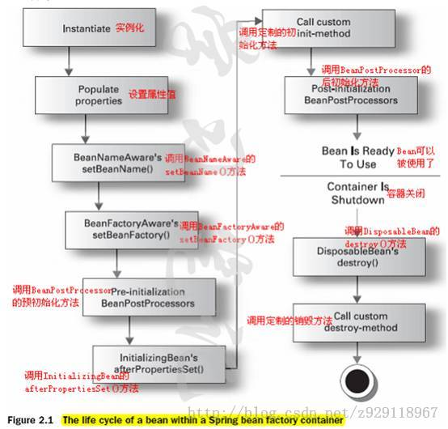
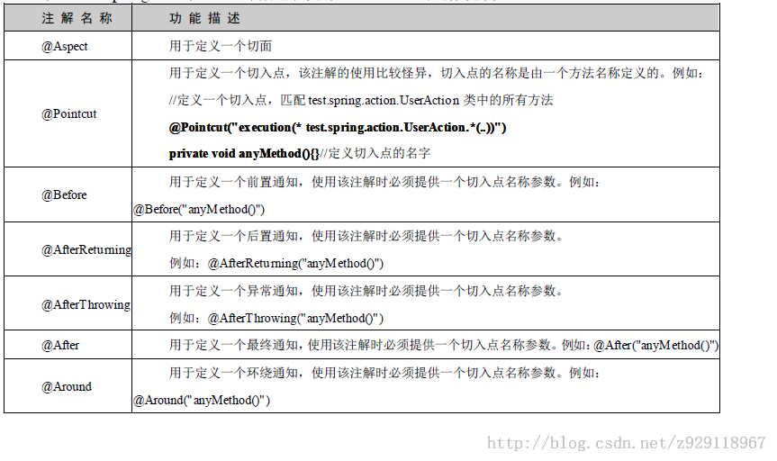
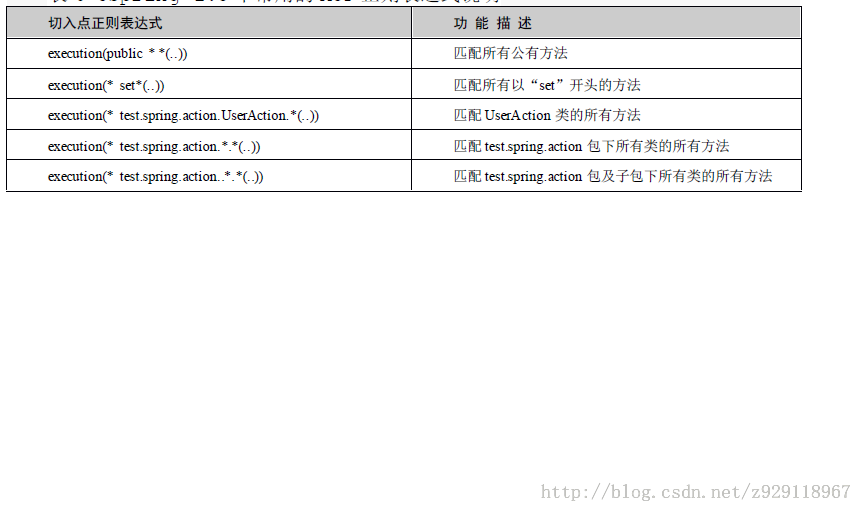

<!doctype HTML>
<html>
<head>
<meta charset="utf-8" />
<meta name="viewport" content="width=device-width,initial-scale=1,maximum-scale=1" />
<title>spring开发</title>
<style>
/* RESET
=============================================================================*/
html, body, div, span, applet, object, iframe, h1, h2, h3, h4, h5, h6, p,
	blockquote, pre, a, abbr, acronym, address, big, cite, code, del, dfn,
	em, img, ins, kbd, q, s, samp, small, strike, strong, sub, sup, tt, var,
	b, u, i, center, dl, dt, dd, ol, ul, li, fieldset, form, label, legend,
	table, caption, tbody, tfoot, thead, tr, th, td, article, aside, canvas,
	details, embed, figure, figcaption, footer, header, hgroup, menu, nav,
	output, ruby, section, summary, time, mark, audio, video {
	margin: 0;
	padding: 0;
	border: 0;
}

/* BODY
=============================================================================*/
body {
	font-family: Helvetica, arial, freesans, clean, sans-serif;
	font-size: 14px;
	line-height: 1.6;
	color: #333;
	background-color: #fff;
	padding: 0 30px 0 270px;
	max-width: 960px;
	margin: 0 auto;
}

body>*:first-child {
	margin-top: 0 !important;
}

body>*:last-child {
	margin-bottom: 0 !important;
}

/**********   索引 **********************************/
nav {
	font-size: 10pt;
	overflow-x: hidden;
	overflow-y: auto;
	position: fixed;
	top: 0;
	left: 0;
	bottom: 0;
	width: 270px;
}

nav .menubar {
	border-bottom: solid 1px #ccc;
	display: none;
	height: 48px;
	line-height: 48px;
	padding: 0 10px;
}

nav .button {
	background: #777;
	border: 1px solid #333;
	color: #fff;
	font-size: 10pt;
	font-weight: bold;
	padding: 8px;
	border-radius: 4px;
}

nav ul {
	padding: 0 0 0 10px;
}

nav ul a {
	color: #333;
	text-decoration: none;
}

nav ul a:hover {
	text-decoration: underline;
}

nav li {
	line-height: 180%;
	list-style: none;
	margin: 0;
	padding: 0;
}

nav .level2 {
	font-size: 11pt;
	font-weight: bold;
}

nav .level3 {
	padding-left: 1em;
}

nav .level4 {
	padding-left: 2em;
}

nav .level5 {
	padding-left: 4em;
}

nav .level6 {
	padding-left: 8em;
}

header {
	text-align: center;
}

/* BLOCKS
=============================================================================*/
p, blockquote, ul, ol, dl, table, pre {
	margin: 15px 0;
}

/* HEADERS
=============================================================================*/
h1, h2, h3, h4, h5, h6 {
	margin: 20px 0 10px;
	padding: 0;
	font-weight: bold;
	-webkit-font-smoothing: antialiased;
}

h1 tt, h1 code, h2 tt, h2 code, h3 tt, h3 code, h4 tt, h4 code, h5 tt,
	h5 code, h6 tt, h6 code {
	font-size: inherit;
}

h1 {
	font-size: 28px;
	color: #000;
}

h2 {
	font-size: 24px;
	border-bottom: 1px solid #ccc;
	color: #000;
}

h3 {
	font-size: 18px;
}

h4 {
	font-size: 16px;
}

h5 {
	font-size: 14px;
}

h6 {
	color: #777;
	font-size: 14px;
}

body>h2:first-child, body>h1:first-child, body>h1:first-child+h2, body>h3:first-child,
	body>h4:first-child, body>h5:first-child, body>h6:first-child {
	margin-top: 0;
	padding-top: 0;
}

a:first-child h1, a:first-child h2, a:first-child h3, a:first-child h4,
	a:first-child h5, a:first-child h6 {
	margin-top: 0;
	padding-top: 0;
}

h1+p, h2+p, h3+p, h4+p, h5+p, h6+p {
	margin-top: 10px;
}

/* LINKS
=============================================================================*/
a {
	color: #4183C4;
	text-decoration: none;
}

a:hover {
	text-decoration: underline;
}

/* LISTS
=============================================================================*/
ul, ol {
	padding-left: 30px;
}

ul li>:first-child, ol li>:first-child, ul li ul:first-of-type, ol li ol:first-of-type,
	ul li ol:first-of-type, ol li ul:first-of-type {
	margin-top: 0px;
}

ul ul, ul ol, ol ol, ol ul {
	margin-bottom: 0;
}

dl {
	padding: 0;
}

dl dt {
	font-size: 14px;
	font-weight: bold;
	font-style: italic;
	padding: 0;
	margin: 15px 0 5px;
}

dl dt:first-child {
	padding: 0;
}

dl dt>:first-child {
	margin-top: 0px;
}

dl dt>:last-child {
	margin-bottom: 0px;
}

dl dd {
	margin: 0 0 15px;
	padding: 0 15px;
}

dl dd>:first-child {
	margin-top: 0px;
}

dl dd>:last-child {
	margin-bottom: 0px;
}

/* CODE
=============================================================================*/
pre, code, tt {
	font-size: 12px;
	font-family: Consolas, "Liberation Mono", Courier, monospace;
}

code, tt {
	margin: 0 0px;
	padding: 0px 0px;
	white-space: nowrap;
	border: 1px solid #eaeaea;
	background-color: #f8f8f8;
	border-radius: 3px;
}

pre>code {
	margin: 0;
	padding: 0;
	white-space: pre;
	border: none;
	background: transparent;
}

pre {
	background-color: #f8f8f8;
	border: 1px solid #ccc;
	font-size: 13px;
	line-height: 19px;
	overflow: auto;
	padding: 6px 10px;
	border-radius: 3px;
}

pre code, pre tt {
	background-color: transparent;
	border: none;
}

kbd {
	-moz-border-bottom-colors: none;
	-moz-border-left-colors: none;
	-moz-border-right-colors: none;
	-moz-border-top-colors: none;
	background-color: #DDDDDD;
	background-image: linear-gradient(#F1F1F1, #DDDDDD);
	background-repeat: repeat-x;
	border-color: #DDDDDD #CCCCCC #CCCCCC #DDDDDD;
	border-image: none;
	border-radius: 2px 2px 2px 2px;
	border-style: solid;
	border-width: 1px;
	font-family: "Helvetica Neue", Helvetica, Arial, sans-serif;
	line-height: 10px;
	padding: 1px 4px;
}

/* QUOTES
=============================================================================*/
blockquote {
	border-left: 4px solid #DDD;
	padding: 0 15px;
	color: #777;
}

blockquote>:first-child {
	margin-top: 0px;
}

blockquote>:last-child {
	margin-bottom: 0px;
}

/* HORIZONTAL RULES
=============================================================================*/
hr {
	clear: both;
	margin: 15px 0;
	height: 0px;
	overflow: hidden;
	border: none;
	background: transparent;
	border-bottom: 4px solid #ddd;
	padding: 0;
}

/* TABLES
=============================================================================*/
table th {
	font-weight: bold;
}

table th, table td {
	border: 1px solid #ccc;
	padding: 6px 13px;
}

table tr {
	border-top: 1px solid #ccc;
	background-color: #fff;
}

table tr:nth-child(2n) {
	background-color: #f8f8f8;
}

/* IMAGES
=============================================================================*/
img {
	max-width: 100%
}

/***********  底部 *************************/
footer {
	border-top: 1px solid #ccc;
	font-size: 10pt;
	margin-top: 4em;
}

/******************** media **********************************/
@media ( max-width : 768px) {
	body {
		padding: 0 10px 0 300px;
	}
	nav {
		width: 300px;
	}
}

@media ( max-width : 480px) {
	body {
		padding: 64px 10px 0 10px;
	}
	header .banner {
		display: none;
	}
	nav {
		position: absolute;
		width: 100%;
	}
	nav .menubar {
		display: block;
	}
	nav .banner {
		float: right;
	}
	nav ul {
		background: #fff;
		display: none;
		font-size: 14pt;
		margin: 0;
		padding: 0 0 0 8px;
	}
	nav .level2 {
		font-size: 16pt;
		font-weight: bold;
	}
	nav li {
		line-height: 240%;
	}
	.index nav ul {
		display: block;
	}
	.index article {
		display: none;
	}
}
</style>
<script>
  (function (tags) {
    var i = 0, len = tags.length;

    for (; i < len; ++i) {
        document.createElement(tags[i]);
    }
  }([ 'header', 'nav', 'article', 'footer' ]));
</script>
</head>
<body>
<header>
<h1 id="spring-">spring 简介</h1>

</header>
<nav>
<div class="menubar">
<a class="button">&#9776;&nbsp;索引</a>
</div>
<ul>
<li class="level2"><a href="#1">1&nbsp;&nbsp;认识spring</a></li><li class="level3"><a href="#1.1">1.1&nbsp;&nbsp;术语介绍</a></li><li class="level4"><a href="#1.1.1">1.1.1&nbsp;&nbsp;轻量级(Lightweight)</a></li><li class="level4"><a href="#1.1.2">1.1.2&nbsp;&nbsp;容器(Container)</a></li><li class="level4"><a href="#1.1.3">1.1.3&nbsp;&nbsp;Inversion of Control与Dependency Injection</a></li><li class="level4"><a href="#1.1.4">1.1.4&nbsp;&nbsp;AOP(Aspect-oriented programming)</a></li><li class="level4"><a href="#1.1.5">1.1.5&nbsp;&nbsp;持久层</a></li><li class="level4"><a href="#1.1.6">1.1.6&nbsp;&nbsp;其它企业服务的封装</a></li><li class="level3"><a href="#1.2">1.2&nbsp;&nbsp;spring环境搭建</a></li><li class="level2"><a href="#2">2&nbsp;&nbsp;控制反转</a></li><li class="level3"><a href="#2.1">2.1&nbsp;&nbsp;Bean的管理</a></li><li class="level4"><a href="#2.1.1">2.1.1&nbsp;&nbsp;BeanFactory</a></li><li class="level5"><a href="#2.1.1.1">2.1.1.1&nbsp;&nbsp;实例</a></li><li class="level4"><a href="#2.1.2">2.1.2&nbsp;&nbsp;ApplicationContext</a></li><li class="level5"><a href="#2.1.2.1">2.1.2.1&nbsp;&nbsp;使用数组引入多个配置文件</a></li><li class="level5"><a href="#2.1.2.2">2.1.2.2&nbsp;&nbsp;使用*通配符引入多个配置文件</a></li><li class="level5"><a href="#2.1.2.3">2.1.2.3&nbsp;&nbsp;使用<import>引入多个配置文件</a></li><li class="level5"><a href="#2.1.2.4">2.1.2.4&nbsp;&nbsp;WEB工程对spring配置文件的引用</a></li><li class="level4"><a href="#2.1.3">2.1.3&nbsp;&nbsp;bean的别名</a></li><li class="level4"><a href="#2.1.4">2.1.4&nbsp;&nbsp;bean的实例化</a></li><li class="level5"><a href="#2.1.4.1">2.1.4.1&nbsp;&nbsp;构造方法实例化</a></li><li class="level5"><a href="#2.1.4.2">2.1.4.2&nbsp;&nbsp;静态工厂方法实例化</a></li><li class="level5"><a href="#2.1.4.3">2.1.4.3&nbsp;&nbsp;实例工厂方法实例化（不讲）</a></li><li class="level4"><a href="#2.1.5">2.1.5&nbsp;&nbsp;bean的scope</a></li><li class="level4"><a href="#2.1.6">2.1.6&nbsp;&nbsp;bean的生命周期</a></li><li class="level5"><a href="#2.1.6.1">2.1.6.1&nbsp;&nbsp;bean的生命周期详解</a></li><li class="level5"><a href="#2.1.6.2">2.1.6.2&nbsp;&nbsp;bean生命周期简单讲解</a></li><li class="level4"><a href="#2.1.7">2.1.7&nbsp;&nbsp;bean的继承</a></li><li class="level5"><a href="#2.1.7.1">2.1.7.1&nbsp;&nbsp;bean的定义</a></li><li class="level5"><a href="#2.1.7.2">2.1.7.2&nbsp;&nbsp;配置文件</a></li><li class="level5"><a href="#2.1.7.3">2.1.7.3&nbsp;&nbsp;测试代码</a></li><li class="level4"><a href="#2.1.8">2.1.8&nbsp;&nbsp;bean的依赖设置</a></li><li class="level5"><a href="#2.1.8.1">2.1.8.1&nbsp;&nbsp;构造方法注入</a></li><li class="level5"><a href="#2.1.8.2">2.1.8.2&nbsp;&nbsp;setter注入</a></li><li class="level5"><a href="#2.1.8.3">2.1.8.3&nbsp;&nbsp;注入实例</a></li><li class="level5"><a href="#2.1.8.4">2.1.8.4&nbsp;&nbsp;自动绑定</a></li><li class="level5"><a href="#2.1.8.5">2.1.8.5&nbsp;&nbsp;使用注解注入</a></li><li class="level5"><a href="#2.1.8.6">2.1.8.6&nbsp;&nbsp;自动扫描bean</a></li><li class="level3"><a href="#2.2">2.2&nbsp;&nbsp;bean 的高级管理</a></li><li class="level4"><a href="#2.2.1">2.2.1&nbsp;&nbsp;Aware接口</a></li><li class="level5"><a href="#2.2.1.1">2.2.1.1&nbsp;&nbsp;实例</a></li><li class="level4"><a href="#2.2.2">2.2.2&nbsp;&nbsp;BeanPostProcessor</a></li><li class="level5"><a href="#2.2.2.1">2.2.2.1&nbsp;&nbsp;实例</a></li><li class="level2"><a href="#3">3&nbsp;&nbsp;AOP</a></li><li class="level3"><a href="#3.1">3.1&nbsp;&nbsp;动态代理</a></li><li class="level4"><a href="#3.1.1">3.1.1&nbsp;&nbsp;JDK动态代理</a></li><li class="level4"><a href="#3.1.2">3.1.2&nbsp;&nbsp;CGLIB动态代理</a></li><li class="level3"><a href="#3.2">3.2&nbsp;&nbsp;AOP专业术语</a></li><li class="level4"><a href="#3.2.1">3.2.1&nbsp;&nbsp;Cross-cutting-concern</a></li><li class="level4"><a href="#3.2.2">3.2.2&nbsp;&nbsp;Aspect</a></li><li class="level4"><a href="#3.2.3">3.2.3&nbsp;&nbsp;Advice</a></li><li class="level4"><a href="#3.2.4">3.2.4&nbsp;&nbsp;JoinPoint</a></li><li class="level4"><a href="#3.2.5">3.2.5&nbsp;&nbsp;Pointcut</a></li><li class="level4"><a href="#3.2.6">3.2.6&nbsp;&nbsp;Target</a></li><li class="level4"><a href="#3.2.7">3.2.7&nbsp;&nbsp;Introduction</a></li><li class="level4"><a href="#3.2.8">3.2.8&nbsp;&nbsp;Weave</a></li><li class="level4"><a href="#3.2.9">3.2.9&nbsp;&nbsp;Spring AOP介绍</a></li><li class="level3"><a href="#3.3">3.3&nbsp;&nbsp;AOP XML配置实现</a></li><li class="level4"><a href="#3.3.1">3.3.1&nbsp;&nbsp;切面类</a></li><li class="level4"><a href="#3.3.2">3.3.2&nbsp;&nbsp;配置文件</a></li><li class="level4"><a href="#3.3.3">3.3.3&nbsp;&nbsp;业务方法</a></li><li class="level4"><a href="#3.3.4">3.3.4&nbsp;&nbsp;业务方法测试类</a></li><li class="level3"><a href="#3.4">3.4&nbsp;&nbsp;AOP 注解实现</a></li><li class="level4"><a href="#3.4.1">3.4.1&nbsp;&nbsp;切面类</a></li><li class="level5"><a href="#3.4.1.1">3.4.1.1&nbsp;&nbsp;切面表达式的解析</a></li><li class="level4"><a href="#3.4.2">3.4.2&nbsp;&nbsp;业务类</a></li><li class="level4"><a href="#3.4.3">3.4.3&nbsp;&nbsp;测试类</a></li><li class="level4"><a href="#3.4.4">3.4.4&nbsp;&nbsp;其它配置形式</a></li><li class="level5"><a href="#3.4.4.1">3.4.4.1&nbsp;&nbsp;获取输入参数</a></li><li class="level5"><a href="#3.4.4.2">3.4.4.2&nbsp;&nbsp;获取返回值</a></li><li class="level5"><a href="#3.4.4.3">3.4.4.3&nbsp;&nbsp;获取程序的异常</a></li><li class="level4"><a href="#3.4.5">3.4.5&nbsp;&nbsp;所谓切入点的定义</a></li><li class="level3"><a href="#3.5">3.5&nbsp;&nbsp;Spring 2.5 中常用的AOP 正则表达式说明</a></li><li class="level2"><a href="#4">4&nbsp;&nbsp;Spring jdbc</a></li><li class="level3"><a href="#4.1">4.1&nbsp;&nbsp;集成配置</a></li><li class="level4"><a href="#4.1.1">4.1.1&nbsp;&nbsp;声明事务的tx命名空间</a></li><li class="level4"><a href="#4.1.2">4.1.2&nbsp;&nbsp;配置文件</a></li><li class="level5"><a href="#4.1.2.1">4.1.2.1&nbsp;&nbsp;配置数据源</a></li><li class="level5"><a href="#4.1.2.2">4.1.2.2&nbsp;&nbsp;配置事务管理类</a></li><li class="level5"><a href="#4.1.2.3">4.1.2.3&nbsp;&nbsp;配置spring对事物的支持</a></li><li class="level5"><a href="#4.1.2.4">4.1.2.4&nbsp;&nbsp;定义通知</a></li><li class="level4"><a href="#4.1.3">4.1.3&nbsp;&nbsp;使用JdbcTemplate完成开发</a></li><li class="level5"><a href="#4.1.3.1">4.1.3.1&nbsp;&nbsp;添加操作</a></li><li class="level5"><a href="#4.1.3.2">4.1.3.2&nbsp;&nbsp;删除操作</a></li><li class="level5"><a href="#4.1.3.3">4.1.3.3&nbsp;&nbsp;修改操作</a></li><li class="level5"><a href="#4.1.3.4">4.1.3.4&nbsp;&nbsp;查询操作</a></li><li class="level3"><a href="#4.2">4.2&nbsp;&nbsp;注解事务的支持</a></li><li class="level4"><a href="#4.2.1">4.2.1&nbsp;&nbsp;异常处理</a></li><li class="level4"><a href="#4.2.2">4.2.2&nbsp;&nbsp;事务传播行为</a></li><li class="level5"><a href="#4.2.2.1">4.2.2.1&nbsp;&nbsp;只读事物</a></li><li class="level4"><a href="#4.2.3">4.2.3&nbsp;&nbsp;事务隔离级别</a></li><li class="level3"><a href="#4.3">4.3&nbsp;&nbsp;基于XML方式配置事务</a></li></ul>

</nav>
<article>
<h2 id="1">1&nbsp;&nbsp;认识spring</h2>
<blockquote>
<p>Spring的核心是轻量级(Lightweigt)的容器，它是实现IOC(Inversion of Control)容器和非侵入式(No intrusive)的框架，它提供AOP(Aspect-orientedprogramming)概念的实现方式；提供对持久层(Persistence)，事务(Transaction)的支持，提供MVC WEB框架的实现，并对一些常用的企业级API提供一致的模型封装，是一个全方面的应用程序框架，除此之外，对于现存的各种框架(Struts,Hibernate等)，Spring也提供了与它们相整合的方案。也就是说它不仅仅专注于某一层的解决方案，可以说Spring是企业级应用开发的“一站式”选择，Spring贯穿表现层，业务层，持久层，Spring并不是想取代这些已有的框架，而是对它们进行无缝整合。</p>
</blockquote>
<h3 id="1.1">1.1&nbsp;&nbsp;术语介绍</h3>
<blockquote>
<p>Spring的目标之一，是作为一个全方位的应用程序框架，由于各个应用在各个领悟中的应用越来越复杂，因此这里牵涉到专业术语比较多，下面逐个介绍一下。</p>
</blockquote>
<h4 id="1.1.1">1.1.1&nbsp;&nbsp;轻量级(Lightweight)</h4>
<blockquote>
<p>轻量级是相对于一些重量级的容器(EJB)来说的，Spring的核心包不是很大，大概那么2,3M,使用Spring的核心功能需要的资源也不是很大。<br>另一方面说spring框架在系统初始化的时候不用加载所有的服务，为系统节约了资源！而EJB框架就是重量级的，每次初始化都必须加载所有的服务！<br>此外，所谓Spring是轻量级是相对的，当Spring所以的服务都开启的情况下Spring也是重量级的框架。</p>
</blockquote>
<h4 id="1.1.2">1.1.2&nbsp;&nbsp;容器(Container)</h4>
<blockquote>
<p>容器可以管理对象的生成，资源取得，销毁等生命周期，甚至建立对象与对象之间的依赖关系，Spring提供容器功能，您可以使用一个配置文件（通常是XML）在当中确定对象名称，确定如何产生对象，哪个对象产生之后必须设定成为某个对象的属性等。在启动容器之后，所有的对象都可以直接取用，不用编写任何一行程序代码产生对象，或者建立对象与对象直接的依赖。</p>
</blockquote>
<h4 id="1.1.3">1.1.3&nbsp;&nbsp;Inversion of Control与Dependency Injection</h4>
<blockquote>
<p>Spring最重要的核心概念是Inversionof Control，中文翻译“控制反转”，简称IOC。在Spring中，“依赖关系的转移”，“依赖于抽象而非实现”是重要的概念，从对象角度来说，可以避免对象之间的耦合；从容器的角度来说，可以避免应用程序依赖于容器的功能，而从容器脱离。</p>
<p>Spring另一个重要核心概念为DependencyInjection，中文翻译“依赖注入”简称DI，使用Spring，不必自己在程序代码中对象的依赖关系。只需要在配置文件中加以配置，Spring核心容器会自动根据配置，将依赖注入到指定的对象。</p>
</blockquote>
<h4 id="1.1.4">1.1.4&nbsp;&nbsp;AOP(Aspect-oriented programming)</h4>
<blockquote>
<p>Spring最被人重视的功能之一是支持AOP的实现，然而AOP框架只是Spring支持的一个子框架，说Spring框架式AOP框架并不是一个适当的描述。</p>
<p>举例来说AOP的应用，假设在应用程序有个日志的需求，就可以爱无须修改任何代码的情况下，就将这个需求加入到原先的应用程序中，而若您愿意，可以在不修改任何代码的情况下，讲日志功能移除。</p>
</blockquote>
<h4 id="1.1.5">1.1.5&nbsp;&nbsp;持久层</h4>
<blockquote>
<p>Spring提供对持久层的整合，如对JDBC的使用加以封装与简化，提供编程式事务，与声明是事务管理功能。对应OR Mapping工具(Hibernate, MyBatis)的整合以及使用上的简化，Spring与提供了对应的解决方案。</p>
</blockquote>
<h4 id="1.1.6">1.1.6&nbsp;&nbsp;其它企业服务的封装</h4>
<blockquote>
<p>对于一些服务，例如JNDI， Mail， 任务计划，远程等，Spring不直接提供实现，而是采取抽象方式对这些服务进行封装，让这些服务有一致的使用模型。</p>
</blockquote>
<h3 id="1.2">1.2&nbsp;&nbsp;spring环境搭建</h3>
<blockquote>
<p>针对一般的java工程。
到<a href="http://www.springsource.org/download下载spring，然后进行解压缩。">http://www.springsource.org/download下载spring，然后进行解压缩。</a></p>
</blockquote>
<p>拷贝到classpath下：</p>
<pre><code>dist\spring.jar

lib\jakarta-commons\commons-logging.jar</code></pre>
<p>如果使用AOP,还需要下列jar文件</p>
<pre><code>lib/aspectj/aspectjweaver.jar和aspectjrt.jar

lib/cglib/cglib-nodep-2.1_3.jar</code></pre>
<p>如果使用的注解需要下面的jar 包</p>
<pre><code>lib\j2ee\common-annotations.jar</code></pre>
<h2 id="2">2&nbsp;&nbsp;控制反转</h2>
<blockquote>
<p>Spring的核心概念是IOC，IOC的抽象概念是“依赖关系的转移”。转移是相对于过去不良的应用程序设计来说的，像“高层模块不应该依赖底层的模块，而模块都必须依赖于抽象，”对IOC来说“实现必须依赖抽象，而不抽象依赖实现”或者说“应用程序不依赖于容器，而是容器服务于应用程序”。</p>
</blockquote>
<p><strong>IOC原理实例  </strong></p>
<blockquote>
<p>应用程序在需要存储时候直接运行保存到软盘的话，导致高层应用程序依赖于底层的API，假设今天需要将应用程序移植到另一个平台上，如果该平台使用USB磁盘作为存储介质的话，则这个应用程序无法直接重用，必须加以修改才行。在这个例子中，由于底层模块介质的变化，造成搞错模块与必须跟着变化，这不是一个良好的设计方案，在设计上希望模块都依赖于模块的抽象，这样才可以重用高层的应用程序。</p>
</blockquote>
<p>设计Business类，它不依赖于任何实现类，而是抽象。</p>
<pre><code>public class Business {

private IDeviceWriter writer;

public void setWriter(IDeviceWriter writer) {

    this.writer = writer;

}

public void save() {

    writer.saveToDevice();

}

}</code></pre>
<p>针对USB存储的实现。</p>
<pre><code>public class UsbDiskWriter implements IDeviceWriter {

    public void saveToDevice() {

        System.out.println(&quot;usb disk wirter......&quot;);

    }

}</code></pre>
<p>针对DVD存储的实现。</p>
<pre><code>public class DvdDiskWriter implements IDeviceWriter {

    public void saveToDevice() {

        System.out.println(&quot;dvd disk wirter......&quot;);

    }

}</code></pre>
<p>具体业务实现类，无论底层的存储实现如何变化，对于Business类来说都无须做任何修改。</p>
<pre><code>public class Business {

    private IDeviceWriter writer;

    public void setWriter(IDeviceWriter writer) {

        this.writer = writer;

    }

    public void save() {

        writer.saveToDevice();

    }

}</code></pre>
<p>编写一个配置管理程序，通过简单的XML或者properties文件来更改配置，如此，连上面的配置程序都不必编写。</p>
<pre><code>public class BusinessFactory {

    private static BusinessFactory factory;

    private Business business;

    private IDeviceWriter writer;

    private Properties props;


    private BusinessFactory() throws Exception {

        props = new Properties();

        props.load(new FileInputStream(&quot;config.properties&quot;));

        String businessClass = props.getProperty(&quot;business.class&quot;);

        String writerClass = props.getProperty(&quot;writer.class&quot;);

    business = (Business) Class.forName(businessClass).newInstance();

    writer = (IDeviceWriter) Class.forName(writerClass).newInstance();

        business.setWriter(writer);

    }

    public static BusinessFactory getInstance() throws Exception {

        if (factory == null) {

            factory = new BusinessFactory();

        }

        return factory;

    }

    public Business getBusiness() {

        return business;

    }

    public IDeviceWriter getWriter() {

        return writer;

    }

}</code></pre>
<p>config.properties</p>
<pre><code>business.class=com.spring2.ioc.Business

writer.class=com.spring2.ioc.UsbDiskWriter</code></pre>
<p>通过BusinessFactory获得Business实例，并执行save()方法。</p>
<pre><code>public class Main {

    public static void main(String[] args) {

        Business business;

        try {

            business = BusinessFactory.getInstance().getBusiness();

            business.save();

        } catch (Exception e) {

            e.printStackTrace();

        }

    }

}</code></pre>
<p><strong>IOC实例分析</strong></p>
<blockquote>
<p>以上的实例来看，DependencyInversion的意思是“程序不依赖于实现，程序与实现都要依赖于抽象。”</p>
<p>IOC中的Control是控制意思，其实背后的意义是一种依赖关系的转移，如果A依赖于B，其意思是B拥有控制权，如果转移这种关系（依赖关系的反转即控制关系的反转）将控制权由实现的一方转移到抽象的一方，让抽象拥有控制权，可以获得组件的可重用性。在上面的Business程序中，整个控制权由实现类转移到IDeviceWriter接口，让Business依赖这个接口，关键在于我们的两个实现类都依赖于IDeviceWriter。</p>
<p>IOC的要求是容器不应该（或劲量不要）侵入应用程序，也就是不应该出现于容器相依赖的API，应用程序本身可以依赖于抽象的接口，容器可以通过这些抽象接口讲所需的资源注入值应用程序。应用程序不向容器要求资源，故而不会依赖于容器特定的API，应用程序本身不会意识到正被容器使用，故而可以随时从容器系统中脱离，转移到其它的容器或者框架而不需要作任何的修改。</p>
</blockquote>
<h3 id="2.1">2.1&nbsp;&nbsp;Bean的管理</h3>
<blockquote>
<p>org.springframework.beans包，与org.springframework.context包是Spring IOC容器的基础。BeanFactory负责Bean的配置，管理Bean的加载，生成，维护，以及Bean对象之间的依赖关系，总的来说它负责Bean的生命周期，ApplicationContext是BeanFactory的扩展，功能得到进一步的增强，比如：更方便与AOP的集成，资源处理，事件传递，支持国际化，以及不同应用层的Context实现（针对web应用的WebApplicationContext）。</p>
<p>总体来说，BeanFactory提供了基本功能，而ApplicationContext则增强了更多对企业级的功能，ApplicationContext完全由BeanFactory扩展而来，因此BeanFactory所具备的能力和行为也适用于ApplicationContext。Spring的创建者Rod Johnson也建议使用ApplicationContext。</p>
</blockquote>
<p>Spring 配置文件</p>
<pre><code>&lt;?xml version=&quot;1.0&quot; encoding=&quot;UTF-8&quot;?&gt;

&lt;beans xmlns=&quot;http://www.springframework.org/schema/beans&quot;

xmlns:xsi=&quot;http://www.w3.org/2001/XMLSchema-instance&quot;

xsi:schemaLocation=&quot;http://www.springframework.org/schema/beans http://www.springframework.org/schema/beans/spring-beans-2.5.xsd&quot;&gt;

&lt;/beans&gt;</code></pre>
<h4 id="2.1.1">2.1.1&nbsp;&nbsp;BeanFactory</h4>
<blockquote>
<p>org.springframework.beans.factory.BeanFactory负责Bean的加载，生成，维护Bean与Bean之间的依赖关系，它负责Bean的整个生命周期，BeanFactory有下面五个方法可以调用。</p>
</blockquote>
<table>
<thead>
<tr>
<th>方法</th>
<th>说明</th>
</tr>
</thead>
<tbody>
<tr>
<td>boolean containsBean(String name)</td>
<td>是否包含名为name的bean</td>
</tr>
<tr>
<td>Object getBean(String name)</td>
<td>按照指定的name获取Bean的实例</td>
</tr>
<tr>
<td>Object getBean(String name, Class)</td>
<td>按照指定的name获取Bean的实例，并转化成Class类型。 </td>
</tr>
<tr>
<td>Class getType(String name)</td>
<td>按照指定name，获取改bean的类型。</td>
</tr>
<tr>
<td>boolean isSingleton(String name)</td>
<td>判断指定的bean是否为单列模式。</td>
</tr>
</tbody>
</table>
<h5 id="2.1.1.1">2.1.1.1&nbsp;&nbsp;实例</h5>
<pre><code>import org.springframework.beans.factory.BeanFactory;

import org.springframework.beans.factory.xml.XmlBeanFactory;

import org.springframework.core.io.ClassPathResource;

import org.springframework.core.io.Resource;

import com.spring2.ioc.DvdDiskWriter;

public class TestBeanFactory {

    public static void main(String[] args) {

    Resource resouce = new ClassPathResource(&quot;applicationContext.xml&quot;);

        BeanFactory factory = new XmlBeanFactory(resouce);

        DvdDiskWriter dvd = (DvdDiskWriter) factory.getBean(&quot;dvd&quot;);

        dvd.saveToDevice();

    }

}</code></pre>
<blockquote>
<p>Spring 开发团队在设计Spring时，考虑到一些受限资源的应用场合，如移动设备，故特意将BeanFactory 容器尽可能地精简，以减少资源的消耗。但对于那些需要国际化支持、Bean 事件发布与监听的应用来讲，BeanFactory 显然有点力不从心了。于是通过继承BeanFactory 接口，又创建了ApplicationContext 和其它子接口，用以满足Java EE 应用的开发。</p>
</blockquote>
<h4 id="2.1.2">2.1.2&nbsp;&nbsp;ApplicationContext</h4>
<blockquote>
<p>ApplicationContext是BeanFactory的扩展，功能得到进一步的增强，比如：更方便与AOP的集成，资源处理，事件传递，支持国际化，以及不同应用层的Context实现。</p>
</blockquote>
<p>org.springframework.context.ApplicationContext有下面三个最常用的实现类：</p>
<pre><code>org.springframework.context.support.FileSystemXmlApplicationContext
org.springframework.context.support.ClassPathXmlApplicationContext
org.springframework.web.context.support.XmlWebApplicationContext</code></pre>
<p>在实际情况中ClassPathXmlApplicationContext用的最多，所以这里我们就以ClassPathXmlApplicationContext为例，来实体它来实例化bean对象，看能否调用。</p>
<pre><code>import org.springframework.context.ApplicationContext;

import org.springframework.context.support.ClassPathXmlApplicationContext;

public class TestApplicationContext {

    public static void main(String[] args) {

        ApplicationContext context = new ClassPathXmlApplicationContext(&quot;applicationContext.xml&quot;);

        HelloBean hello = (HelloBean) context.getBean(&quot;hello&quot;);

        hello.hello();

    }

}</code></pre>
<p>FileSystemXmlApplicationContext实例</p>
<pre><code>ApplicationContextctx= new FileSystemXmlApplicationContext(newString[]{“d:\\beans.xml“});</code></pre>
<h5 id="2.1.2.1">2.1.2.1&nbsp;&nbsp;使用数组引入多个配置文件</h5>
<blockquote>
<p>ApplicationContext可以读取多个配置文件，它可以使用如下方式读取多个配置文件。</p>
</blockquote>
<pre><code>ApplicationContext context1 = new ClassPathXmlApplicationContext(new String[] { &quot;bean1.xml&quot;, &quot;bean2.xml&quot; });

HelloBean hello1 = (HelloBean) context1.getBean(&quot;hello1&quot;);

HelloBean hello2 = (HelloBean) context1.getBean(&quot;hello2&quot;);

hello1.hello();

hello2.hello();</code></pre>
<h5 id="2.1.2.2">2.1.2.2&nbsp;&nbsp;使用*通配符引入多个配置文件</h5>
<blockquote>
<p>也可以使用*这种通配符来读取配置文件。</p>
</blockquote>
<pre><code>ApplicationContext context2 = new ClassPathXmlApplicationContext(new String[] { &quot;bean*.xml&quot; });

HelloBean hello1 = (HelloBean) context2.getBean(&quot;hello1&quot;);

HelloBean hello2 = (HelloBean) context2.getBean(&quot;hello2&quot;);

hello1.hello();

hello2.hello();</code></pre>
<h5 id="2.1.2.3">2.1.2.3&nbsp;&nbsp;使用<import>引入多个配置文件</h5>
<blockquote>
<p>在struts中，我们可以使用<import>标签来引入多个struts2的配置文件，spring也一样，我们可以将各个模块的bean定义放置在不同的spring配置文件中。</p>
</blockquote>
<pre><code>&lt;?xml version=&quot;1.0&quot; encoding=&quot;UTF-8&quot;?&gt;

&lt;beans xmlns=&quot;http://www.springframework.org/schema/beans&quot;

    xmlns:xsi=&quot;http://www.w3.org/2001/XMLSchema-instance&quot;

    xsi:schemaLocation=&quot;http://www.springframework.org/schema/beans http://www.springframework.org/schema/beans/spring-beans-2.5.xsd&quot;&gt;

    &lt;import resource=&quot;bean1.xml&quot; /&gt;

    &lt;import resource=&quot;bean2.xml&quot; /&gt;

&lt;/beans&gt;

ApplicationContext context3 = new ClassPathXmlApplicationContext(new String[] { &quot;applicationContext.xml&quot; });

HelloBean hello1 = (HelloBean) context3.getBean(&quot;hello1&quot;);

HelloBean hello2 = (HelloBean) context3.getBean(&quot;hello2&quot;);

hello1.hello();

hello2.hello();</code></pre>
<p>注意：使用<import>的时候，<import>标签必须放在<bean>标签之前，配置文件必须在同一个目录下，或者classpath下。</p>
<h5 id="2.1.2.4">2.1.2.4&nbsp;&nbsp;WEB工程对spring配置文件的引用</h5>
<blockquote>
<p>以上不针对WEB工程，如果是WEB工程的话</p>
</blockquote>
<pre><code>&lt;!-- 指定SPRING的配置文件 --&gt;

&lt;context-param&gt;

    &lt;param-name&gt;contextConfigLocation&lt;/param-name&gt;

    &lt;param-value&gt;classpath:beans.xml&lt;/param-value&gt;

&lt;/context-param&gt;

&lt;context-param&gt;

&lt;param-name&gt;contextConfigLocation&lt;/param-name&gt;

&lt;param-value&gt;/WEB-INF/applicationContext.xml&lt;/param-value&gt;

&lt;/context-param&gt;

&lt;!-- 配置spring整合STRUTS2的监听器 --&gt;

&lt;listener&gt;

    &lt;listener-class&gt;

        org.springframework.web.context.ContextLoaderListener

    &lt;/listener-class&gt;

&lt;/listener&gt;</code></pre>
<h4 id="2.1.3">2.1.3&nbsp;&nbsp;bean的别名</h4>
<blockquote>
<p>有时候bean的别名很有用，比如让应用的每个组件更好的对公共组件进行引用。</p>
</blockquote>
<pre><code>&lt;bean id=&quot;hello&quot; class=&quot;com.spring2.beans.HelloBean&quot; /&gt;

&lt;alias name=&quot;hello&quot; alias=&quot;helloAlias&quot; /&gt;

ApplicationContext context = new ClassPathXmlApplicationContext(&quot;applicationContext.xml&quot;);

HelloBean hello = (HelloBean) context.getBean(&quot;helloAlias&quot;);

hello.hello();</code></pre>
<h4 id="2.1.4">2.1.4&nbsp;&nbsp;bean的实例化</h4>
<blockquote>
<p>在Spring中实例化bean有三种方式，分别是：构造方法实例化，静态工厂方法实例化，实例工厂方法实例化。虽然有3种方式但是构造方法实例化的是使用“最多最多”的。</p>
<p>默认情况下，spring使用的是构造方法实例化bean，也就是调用默认的无参构造方法来实例化bean对象。</p>
</blockquote>
<h5 id="2.1.4.1">2.1.4.1&nbsp;&nbsp;构造方法实例化</h5>
<blockquote>
<p>使用这种方式来实例化bean，spring对class没有特殊的要求，只要求提供“无参构造方法”。</p>
</blockquote>
<pre><code>&lt;bean id=&quot;dvd&quot; class=&quot;com.spring2.ioc.DvdDiskWriter&quot; /&gt;

&lt;bean id=&quot;usb&quot; class=&quot;com.spring2.ioc.UsbDiskWriter&quot; /&gt;

&lt;bean id=&quot;hello&quot; class=&quot;com.spring2.beans.HelloBean&quot; /&gt;</code></pre>
<h5 id="2.1.4.2">2.1.4.2&nbsp;&nbsp;静态工厂方法实例化</h5>
<blockquote>
<p>这个要求在要实例化bean的class提供一个静态的方法，下面的实例是newInstance()。</p>
</blockquote>
<h6 id="-bean">要实例化bean</h6>
<pre><code>public class StaticFactoryMethodBean {

    public void method1() {

        System.out.println(&quot;method1()......&quot;);

    }

    public static StaticFactoryMethodBean newInstance() {

       return new StaticFactoryMethodBean();

    }

}</code></pre>
<h6 id="-">配置文件</h6>
<pre><code>&lt;bean id=&quot;sfmb&quot; class=&quot;com.spring2.beans.StaticFactoryMethodBean&quot;

factory-method=&quot;newInstance&quot; /&gt;</code></pre>
<h6 id="-">测试代码</h6>
<pre><code>ApplicationContext context = new ClassPathXmlApplicationContext(&quot;applicationContext.xml&quot;);

StaticFactoryMethodBean sfmb = (StaticFactoryMethodBean) context.getBean(&quot;sfmb&quot;);

        sfmb.method1();</code></pre>
<h5 id="2.1.4.3">2.1.4.3&nbsp;&nbsp;实例工厂方法实例化（不讲）</h5>
<h6 id="-bean">要实例化的bean</h6>
<pre><code>public class MyBean {

    public void method() {

        System.out.println(&quot;method()......&quot;);

    }

}</code></pre>
<h6 id="bean-">Bean工厂</h6>
<pre><code>public class MyBeanFactory {

    public MyBean newInstance() {

        return new MyBean();

    }

}</code></pre>
<h6 id="-">配置文件</h6>
<pre><code>&lt;bean id=&quot;beanFactory&quot; class=&quot;com.spring2.beans.MyBeanFactory&quot; /&gt;

&lt;bean id=&quot;myBean&quot; class=&quot;com.spring2.beans.MyBean&quot; factory-bean=&quot;beanFactory&quot;factory-method=&quot;newInstance&quot; /&gt;</code></pre>
<h6 id="-">测试代码</h6>
<pre><code>ApplicationContext context = new ClassPathXmlApplicationContext(&quot;applicationContext.xml&quot;);

MyBean bean = (MyBean) context.getBean(&quot;myBean&quot;);

bean.method();</code></pre>
<h4 id="2.1.5">2.1.5&nbsp;&nbsp;bean的scope</h4>
<blockquote>
<p>在spring中，从BeanFactory与ApplicationContext中获取的bean实例默认为singleton，也就是默认每一个bean只维持一个实例。即使我们多次运行getBean()获取的也是同一个bean实例。</p>
<p>这种情况在单线程的时候不会有问题，但是如果是多线程的时候，必须考虑线程安全，防止多个线程同时存取共有资源，这时候可以设置scope=”prototype”使得每个获取bean的时候都产生一个新的实例。</p>
</blockquote>
<pre><code>&lt;beanid=&quot;beanScope&quot;class=&quot;com.spring2.beans.BeanScope&quot;scope=&quot;singleton&quot; /&gt;

&lt;bean id=&quot;beanScope&quot; class=&quot;com.spring2.beans.BeanScope&quot;scope=&quot;prototype&quot; /&gt;


BeanScope beanScope1 = (BeanScope) context.getBean(&quot;beanScope&quot;);

BeanScope beanScope2 = (BeanScope) context.getBean(&quot;beanScope&quot;);

System.out.println(beanScope1 == beanScope2);</code></pre>
<blockquote>
<p>通过配置scope属性配置为singleton的时候上面打印的是true，prototype的时候是false。</p>
<p>以下的3种scope都使用的较少，类似于J2EE里面的request和session。在使用SpringMVC是可能会用到。</p>
</blockquote>
<p><strong>request</strong></p>
<blockquote>
<p>表示该针对每一次HTTP请求都会产生一个新的bean，同时该bean仅在当前HTTP request内有效</p>
</blockquote>
<p><strong>session</strong></p>
<blockquote>
<p>表示该针对每一次HTTP请求都会产生一个新的bean，同时该bean仅在当前HTTP session内有效</p>
</blockquote>
<p><strong>globalSession</strong></p>
<blockquote>
<p>不过它仅仅在基于portlet的web应用中才有意义。Portlet规范定义了全局Session的概念，它被所有构成某个portletweb应用的各种不同的portlet所共享。</p>
</blockquote>
<h4 id="2.1.6">2.1.6&nbsp;&nbsp;bean的生命周期</h4>
<h5 id="2.1.6.1">2.1.6.1&nbsp;&nbsp;bean的生命周期详解</h5>
<p></p>
<ol>
<li><p>使用默认构造方法或指定构造参数进行Bean实例化。</p>
</li>
<li><p>根据property 标签的配置调用Bean实例中的相关set 方法完成属性的赋值。</p>
</li>
<li><p>如果Bean 实现了BeanNameAware接口，则调用setBeanName()方法传入当前Bean的ID。</p>
</li>
<li><p>如果Bean 实现了BeanFactoryAware接口，则调用setBeanFactory()方法传入当前工厂实例的引用。</p>
</li>
<li><p>如果Bean 实现了ApplicationContextAware接口，则调用setApplicationContext()方法传入当前ApplicationContext 实例的引用。</p>
</li>
<li><p>如果有BeanPostProcessor 与当前Bean 关联，则与之关联的对象的postProcessBeforeInitialzation()方法将被调用。</p>
</li>
<li><p>如果在配置文件中配置Bean 时设置了init-method属性，则调用该属性指定的初始化方法。</p>
</li>
<li><p>如果有BeanPostProcessor 与当前Bean 关联，则与之关联的对象的postProcessAfterInitialzation()方法将被调用。</p>
</li>
<li><p>Bean 实例化完成，处于待用状态，可以被正常使用了。</p>
</li>
<li><p>当Spring 容器关闭时，如果Bean 实现了DisposableBean 接口，则destroy()方法将被调用。</p>
</li>
<li><p>如果在配置文件中配置Bean时设置了destroy-method 属性，则调用该属性指定的方法进行销毁前的一些处理。</p>
</li>
<li><p>Bean 实例被正常销毁。</p>
</li>
</ol>
<pre><code>package com.ioc;

import org.springframework.beans.BeansException;

import org.springframework.beans.factory.BeanFactory;

import org.springframework.beans.factory.BeanFactoryAware;

import org.springframework.beans.factory.BeanNameAware;

import org.springframework.beans.factory.DisposableBean;

import org.springframework.context.ApplicationContext;

import org.springframework.context.ApplicationContextAware;


public class BeanLife implements BeanNameAware, BeanFactoryAware, ApplicationContextAware,

        DisposableBean {

    @Override

    public void setBeanName(String beanName) {

        System.out.println(&quot;beanName=&quot; + beanName);

    }

    @Override

    public void setBeanFactory(BeanFactory bf) throws BeansException {

        System.out.println(&quot;setBeanFactory()......&quot;);

    }

    @Override

    public void setApplicationContext(ApplicationContext ac) throws BeansException {

        System.out.println(&quot;setApplicationContext()......&quot;);

    }

    @Override

    public void destroy() throws Exception {

        System.out.println(&quot;destroy()......&quot;);

    }

    public void initBean() {

        System.out.println(&quot;initBean()......&quot;);

    }

    public void destroyBean() {

        System.out.println(&quot;destroyBean()......&quot;);

    }

    public void test() {

        System.out.println(&quot;test().............&quot;);

    }

}


package com.ioc;


import org.springframework.beans.BeansException;

import org.springframework.beans.factory.config.BeanPostProcessor;

/**

 * BeanPostProcessor用于对Bean的修正

 */

public class MyBeanPostProcessor implements BeanPostProcessor {

    @Override

    public Object postProcessBeforeInitialization(Object bean, String beanName) throws BeansException {

        System.out.println(&quot;postProcessBeforeInitialization(&quot; + beanName + &quot;)...... &quot;);

        return bean;

    }

    @Override

    public Object postProcessAfterInitialization(Object bean, String beanName) throws BeansException {

        System.out.println(&quot;postProcessAfterInitialization(&quot; + beanName + &quot;)...... &quot;);

        return bean;

    }

}


&lt;bean id=&quot;mbpp&quot; class=&quot;com.ioc.MyBeanPostProcessor&quot; /&gt;

&lt;bean id=&quot;beanLife&quot; class=&quot;com.ioc.BeanLife&quot; init-method=&quot;initBean&quot;

        destroy-method=&quot;destroyBean&quot; /&gt;


private AbstractApplicationContext context;

    @Before

    public void init() {

        context = new ClassPathXmlApplicationContext(&quot;beans.xml&quot;);

    }

    @Test

    public void test() {

        BeanLife beanLife = (BeanLife) context.getBean(&quot;beanLife&quot;);

        beanLife.test();

    }

    @After

    public void destroy() {

        context.close();

    }</code></pre>
<h5 id="2.1.6.2">2.1.6.2&nbsp;&nbsp;bean生命周期简单讲解</h5>
<blockquote>
<p>spring容器会管理bean的生命周期，这时候就有个问题，bean是什么时候被实例化的，到底是spring容器初始化的时候，还是getBean()的时候被初始化。</p>
</blockquote>
<pre><code>public class BeanLife {

    public BeanLife() {

        System.out.println(&quot;BeanLife()......&quot;);

    }

}


&lt;bean id=&quot;beanLife&quot; class=&quot;com.spring2.beans.BeanLife&quot; scope=&quot;singleton&quot; /&gt;


ApplicationContext context = new ClassPathXmlApplicationContext(&quot;applicationContext.xml&quot;);

System.out.println(&quot;************************************&quot;);

BeanLife beanLife = (BeanLife) context.getBean(&quot;beanLife&quot;);</code></pre>
<blockquote>
<p>从上面的测试代码发现，如果是singleton的时候，bean是在容器初始化的时候被实例化的，但是如果是prototype的时候是在getBean()的时候被实例化，这个应该比较好理解。</p>
<p>如果想让singleton类型的时候，也和prototype一样，在getBean()的时候被实例化的时候考虑下面的配置。</p>
</blockquote>
<pre><code>&lt;bean id=&quot;beanLife&quot; class=&quot;com.spring2.beans.BeanLife&quot; scope=&quot;singleton&quot; lazy-init=&quot;true&quot; /&gt;</code></pre>
<blockquote>
<p>也就是使用lazy-init=&quot;true&quot;属性来设置，延迟初始化bean。如果要把所有的bean设置延迟初始化的时候考虑这种配置。</p>
</blockquote>
<pre><code>&lt;beans default-lazy-init=&quot;false&quot;&gt;</code></pre>
<blockquote>
<p>如果bean要进行一些初始化的时候，可以设置init-method属性，来设置bean初始化的时候调用的方法。</p>
</blockquote>
<pre><code>&lt;bean id=&quot;beanLife&quot; class=&quot;com.spring2.beans.BeanLife&quot;init-method=&quot;init&quot; /&gt;</code></pre>
<blockquote>
<p>如此同时，如果要销毁对象的话，也会有一个属性destroy-method，在spring容器销毁的时候会回调这个方法。</p>
</blockquote>
<pre><code>&lt;bean id=&quot;beanLife&quot; class=&quot;com.spring2.beans.BeanLife&quot;

init-method=&quot;init&quot;destroy-method=&quot;destory&quot; /&gt;</code></pre>
<blockquote>
<p>要测试的话使用以前的ApplicationContext是无法测试的，得用另一个类org.springframework.context.support.AbstractApplicationContext，这个类里面有一个close()方法，表示正常关闭spring容器。</p>
</blockquote>
<pre><code>AbstractApplicationContext context = new ClassPathXmlApplicationContext(&quot;applicationContext.xml&quot;);

System.out.println(&quot;************************************&quot;);

BeanLife beanLife = (BeanLife) context.getBean(&quot;beanLife&quot;);

context.close();</code></pre>
<h4 id="2.1.7">2.1.7&nbsp;&nbsp;bean的继承</h4>
<p>如果bean的定义文件的内容不断的增长，这个时候也许会发现bean的定义有重复，且这些值都有相同的值，只有其中几个的值不同，这时候可以考虑继承bean。</p>
<h5 id="2.1.7.1">2.1.7.1&nbsp;&nbsp;bean的定义</h5>
<pre><code>public class SomeBean {

    private String name;

    private int age;

    getter(), setter()……

}</code></pre>
<h5 id="2.1.7.2">2.1.7.2&nbsp;&nbsp;配置文件</h5>
<blockquote>
<p>abstract=&quot;true&quot;表明这个bean是抽象bean，spring不会去实例化它，在someBean中设置了parent=&quot;parentBean&quot;，表示它将继承parentBean，在someBean中重新设置name属性的值。</p>
</blockquote>
<pre><code>&lt;bean id=&quot;parentBean&quot;abstract=&quot;true&quot;&gt;

    &lt;property name=&quot;name&quot;&gt;

        &lt;value&gt;test&lt;/value&gt;

    &lt;/property&gt;

    &lt;property name=&quot;age&quot;&gt;

        &lt;value&gt;21&lt;/value&gt;

    &lt;/property&gt;

&lt;/bean&gt;

&lt;bean id=&quot;someBean&quot; class=&quot;com.spring2.beans.SomeBean&quot;parent=&quot;parentBean&quot;&gt;

    &lt;property name=&quot;name&quot;&gt;

        &lt;value&gt;sinoyang&lt;/value&gt;

    &lt;/property&gt;

&lt;/bean&gt;</code></pre>
<h5 id="2.1.7.3">2.1.7.3&nbsp;&nbsp;测试代码</h5>
<pre><code>SomeBean someBean = (SomeBean) context.getBean(&quot;someBean&quot;);

System.out.println(&quot;name=&quot; + someBean.getName() + &quot;, age=&quot; + someBean.getAge());</code></pre>
<h4 id="2.1.8">2.1.8&nbsp;&nbsp;bean的依赖设置</h4>
<blockquote>
<p>在spring中两种基本的依赖注入方式是Setter Injection及Constructor Injection另外针对非singleton的依赖注入，还提供Method Injection，也就是Type 1 Ioc, Type 2 Ioc, Type 3 Ioc。</p>
</blockquote>
<h5 id="2.1.8.1">2.1.8.1&nbsp;&nbsp;构造方法注入</h5>
<blockquote>
<p>第三种Ioc就是我们所说的Constructor Injection（构造方法注入）
在定义bean的时候，可以定义一个无参的构造方法。
使用<constructor-arg>来指定参数，通过这个标签的index属性来设置参数的位置。</p>
</blockquote>
<h6 id="-">实例</h6>
<blockquote>
<p>下面的实例中，构造方法有两个参数一个String一个是StudentDao，通过这个实例来探讨。</p>
</blockquote>
<p>测试bean</p>
<pre><code>public class StudentServiceImpl implements StudentService {

    private StudentDao studentDao;

    private String name;

    public StudentServiceImpl(StudentDao studentDao, String name) {

        this.studentDao = studentDao;

        this.name = name;

    }

    public void saveStudent() {

        studentDao.saveStudent();

        System.out.println(&quot;name=&quot; + name);

    }

}</code></pre>
<p>配置文件</p>
<pre><code>&lt;!-- 使用构造方法注入 --&gt;

&lt;beanid=&quot;studentService&quot; class=&quot;com.spring2.service.impl.StudentServiceImpl&quot;&gt;

    &lt;constructor-arg index=&quot;0&quot; type=&quot;com.spring2.dao.StudentDao&quot;

            ref=&quot;studentDao&quot; /&gt;

    &lt;constructor-arg index=&quot;1&quot; value=&quot;test&quot; /&gt;

&lt;/bean&gt;</code></pre>
<h5 id="2.1.8.2">2.1.8.2&nbsp;&nbsp;setter注入</h5>
<blockquote>
<p>使用setter方法来进行注入，这种方式用的最多。考虑下面的需求，Service层，与Dao层，以前的设计中，总是在Service中实例化Dao的实例，然后在调用Dao的方法，这种情况就造成了Service对Dao的依赖，没有解耦，如果Dao的实现发生了变化，如果由Jdbc的实现，变成了Hibernate，或者Mybatis这些ORM框架是来实现，我们Service层的代码会大改，这从设计层面上来说是不行的。</p>
<p>解决方案：Service层不在依赖于Dao的实现类，也是依赖于抽象，具体的实现类有Spring 来注入。</p>
</blockquote>
<h5 id="2.1.8.3">2.1.8.3&nbsp;&nbsp;注入实例</h5>
<p>Service层</p>
<pre><code>public interface StudentService {

    public void saveStudent();

}


public class StudentServiceImpl implements StudentService {

    private StudentDao studentDao;

    public void setStudentDao(StudentDao studentDao) {

        this.studentDao = studentDao;

    }

    public void saveStudent() {

        studentDao.saveStudent();

    }

}</code></pre>
<p>Dao层</p>
<pre><code>public interface StudentDao {

    public void saveStudent();

}


public class StudentDaoImpl implements StudentDao {

    public void saveStudent() {

        System.out.println(&quot;保存学生信息。。。。。。&quot;);

    }

}</code></pre>
<p>配置文件</p>
<pre><code>&lt;bean id=&quot;studentService&quot; class=&quot;com.spring2.service.impl.StudentServiceImpl&quot;&gt;

    &lt;property name=&quot;studentDao&quot; ref=&quot;studentDao&quot; /&gt;

&lt;/bean&gt;

&lt;bean id=&quot;studentDao&quot; class=&quot;com.spring2.dao.impl.StudentDaoImpl&quot; /&gt;</code></pre>
<p>或者使用“内部bean的方式实现”，这种方式与使用ref的方式相比，没有那么灵活。</p>
<pre><code>&lt;bean id=&quot;studentService&quot; class=&quot;com.spring2.service.impl.StudentServiceImpl&quot;&gt;

    &lt;property name=&quot;studentDao&quot;&gt;

        &lt;bean class=&quot;com.spring2.dao.impl.StudentDaoImpl&quot; /&gt;

    &lt;/property&gt;

&lt;/bean&gt;</code></pre>
<p>测试代码，这里使用了Junit来进行测试。</p>
<pre><code>public class TestSetterInjection {

    @Test

    public void testSetterInjection() {

        ApplicationContext context = new ClassPathXmlApplicationContext(&quot;student_bean.xml&quot;);

StudentService ss = (StudentService) context.getBean(&quot;studentService&quot;);

        ss.saveStudent();

    }

}</code></pre>
<h6 id="-">注入基本类型</h6>
<pre><code>SetterInjectionBean

/**

 * 测试原生数据类型的注入，分别注入，String， int， date

 * @author sinoyang

 */

public class SetterInjectionBean {

    private String name;

    private int age;

    private Date hireDate;

    public void show() {

        System.out.println(&quot;name=&quot; + name);

        System.out.println(&quot;age=&quot; + age);

        System.out.println(&quot;hireDate=&quot; + hireDate);

    }

}</code></pre>
<p>配置文件</p>
<pre><code>&lt;bean id=&quot;hireDate&quot; class=&quot;java.util.Date&quot; /&gt;

&lt;bean id=&quot;setterInjectionBean&quot; class=&quot;com.spring2.beans.SetterInjectionBean&quot;&gt;

    &lt;property name=&quot;name&quot;&gt;

        &lt;value&gt;sinoyang&lt;/value&gt;

    &lt;/property&gt;

    &lt;property name=&quot;age&quot; value=&quot;28&quot; /&gt;

    &lt;property name=&quot;hireDate&quot; ref=&quot;hireDate&quot; /&gt;

&lt;/bean&gt;</code></pre>
<p>Junit测试代码</p>
<pre><code>static ApplicationContext context = null;

@BeforeClass

public static void init() {

context = new ClassPathXmlApplicationContext(&quot;applicationContext.xml&quot;);

}

@Test

public void testSetterInjectionBean() {

    SetterInjectionBean bean = (SetterInjectionBean) context.getBean(&quot;setterInjectionBean&quot;);

    bean.show();

}</code></pre>
<h6 id="-">集合类型注入</h6>
<blockquote>
<p>这里讨论Set,List, Map, Properties 的注入。这些集合的注入在spring总都有相对应的标签支持。
这里要强调的是<refbean="引用其它的bean" />来引用其它的bean。</p>
</blockquote>
<p>测试bean</p>
<pre><code>/**

 * 测试集合的注入

 * @author sinoyang

 */

public class SetterInjectionCollectionBean {

    private Set&lt;String&gt; set = null;

    private List&lt;String&gt; list = null;

    private Map&lt;String, String&gt; map = null;

private Properties pro = null;

}


&lt;bean id=&quot;sicb&quot; class=&quot;com.spring2.beans.SetterInjectionCollectionBean&quot;&gt;

        &lt;property name=&quot;set&quot;&gt;

            &lt;set&gt;

                &lt;value&gt;set1&lt;/value&gt;

                &lt;value&gt;set2&lt;/value&gt;

                &lt;!-- &lt;ref bean=&quot;引用其它的bean&quot; /&gt; --&gt;

            &lt;/set&gt;

        &lt;/property&gt;

        &lt;property name=&quot;list&quot;&gt;

            &lt;list&gt;

                &lt;value&gt;list1&lt;/value&gt;

                &lt;value&gt;list2&lt;/value&gt;

                &lt;!-- &lt;ref bean=&quot;引用其它的bean&quot; /&gt; --&gt;

            &lt;/list&gt;

        &lt;/property&gt;

        &lt;property name=&quot;map&quot;&gt;

            &lt;map&gt;

                &lt;entry key=&quot;key1&quot;&gt;

                    &lt;value&gt;value1&lt;/value&gt;

                    &lt;!-- &lt;ref bean=&quot;引用其它的bean&quot; /&gt; --&gt;

                &lt;/entry&gt;

                &lt;entry key=&quot;key2&quot; value=&quot;value2&quot; /&gt;        

&lt;/map&gt;

        &lt;/property&gt;

        &lt;property name=&quot;pro&quot;&gt;

            &lt;props&gt;

                &lt;prop key=&quot;prop1&quot;&gt;value1&lt;/prop&gt;

                &lt;prop key=&quot;prop2&quot;&gt;value2&lt;/prop&gt;

            &lt;/props&gt;

        &lt;/property&gt;

    &lt;/bean&gt;</code></pre>
<p>Junit测试</p>
<pre><code>@Test

public void testSetterInjectionCollectionBean() {

    SetterInjectionCollectionBean sicb = (SetterInjectionCollectionBean) context.getBean(&quot;sicb&quot;);

    Set&lt;String&gt; set = sicb.getSet();

    // 通过断言来测试是否正确注入

    Assert.assertEquals(3, set.size());

    List&lt;String&gt; list = sicb.getList();

    // 通过断言来测试是否正确注入

    Assert.assertEquals(3, list.size());

    Map&lt;String, String&gt; map = sicb.getMap();

    // 通过断言来测试是否正确注入

    Assert.assertEquals(3, map.size());

    Properties pro = sicb.getPro();

    Assert.assertEquals(3, pro.size());


    Assert.assertEquals(&quot;set1&quot;, set.iterator().next());

    Assert.assertEquals(&quot;list1&quot;, list.get(0));

    Assert.assertEquals(&quot;value3&quot;, map.get(&quot;key3&quot;));

    Assert.assertEquals(&quot;value1&quot;, pro.get(&quot;prop1&quot;));

}</code></pre>
<h5 id="2.1.8.4">2.1.8.4&nbsp;&nbsp;自动绑定</h5>
<blockquote>
<p>Bean可以使用<value>和<ref>指定bean的实例，spring支持隐射的自动的绑定，可以通过类型(byType)，或者名称(byName)，将某个bean实例绑定到其它bean的属性上。</p>
</blockquote>
<h6 id="bytype">byType</h6>
<blockquote>
<p>AutoWireBean中有两个属性一个是String，一个是Date，这里把Date进行注入。这里就使用byType来进行注入。</p>
</blockquote>
<pre><code>public class AutoWireBean {

    private String name;

    private Date date;

    public void show() {

        System.out.println(&quot;name=&quot; + name);

        System.out.println(&quot;date=&quot; + date);

    }

}


&lt;bean id=&quot;date1&quot; class=&quot;java.util.Date&quot; /&gt;

&lt;bean id=&quot;autoWire&quot; class=&quot;com.spring2.beans.AutoWireBean&quot;

        autowire=&quot;byType&quot;&gt;

    &lt;property name=&quot;name&quot; value=&quot;test&quot; /&gt;

&lt;/bean&gt;


@Test

public void testAutoWireBean() {

    AutoWireBean awb = (AutoWireBean) context.getBean(&quot;autoWire&quot;);

    awb.show();

}</code></pre>
<h6 id="byname">byName</h6>
<blockquote>
<p>Bean与byType一样，测试代码页一样，只是配置文件不同，这里是通过名称来配置的，所以配置文件里面配置的与bean的里面的属性要一样。</p>
</blockquote>
<pre><code>&lt;bean id=&quot;date&quot; class=&quot;java.util.Date&quot; /&gt;

&lt;bean id=&quot;autoWire&quot; class=&quot;com.spring2.beans.AutoWireBean&quot;

        autowire=&quot;byName&quot;&gt;

    &lt;property name=&quot;name&quot; value=&quot;test&quot; /&gt;

&lt;/bean&gt;</code></pre>
<h5 id="2.1.8.5">2.1.8.5&nbsp;&nbsp;使用注解注入</h5>
<blockquote>
<p>如果系统比较复杂的话，会导致spring的配置文件会比较臃肿，这时候可以考虑：java代码中使用@Autowired或@Resource注解方式进行注入。如果要使用注解得需要在xml中引入scheme。</p>
</blockquote>
<pre><code>&lt;?xml version=&quot;1.0&quot; encoding=&quot;UTF-8&quot;?&gt;

&lt;beans xmlns=&quot;http://www.springframework.org/schema/beans&quot;

    xmlns:xsi=&quot;http://www.w3.org/2001/XMLSchema-instance&quot;

    xmlns:context=&quot;http://www.springframework.org/schema/context&quot;

    xsi:schemaLocation=&quot;http://www.springframework.org/schema/beans http://www.springframework.org/schema/beans/spring-beans-2.5.xsd

    http://www.springframework.org/schema/context

    http://www.springframework.org/schema/context/spring-context-2.5.xsd&quot;

    &gt;

    &lt;context:annotation-config /&gt;

&lt;/beans&gt;</code></pre>
<p>使用@Autowired或@Resource注解方式进行装配，这两个注解的区别是：@Autowired默认按类型装配，@Resource默认按名称装配，当找不到与名称匹配的bean才会按类型装配。</p>
<pre><code>@Autowired

org.springframework.beans.factory.annotation.Autowired

@Resource

javax.annotation.Resource</code></pre>
<p>此外从这两个注解的出处可以发现，一个是Spring提供的，一个是java所提供，所以推荐使用@Resource，使用它不会与spring进行耦合。</p>
<h6 id="-autowired">@Autowired</h6>
<pre><code>import org.springframework.beans.factory.annotation.Autowired;

import com.spring2.dao.StudentDao;

import com.spring2.service.StudentService;

public class StudentServiceImpl implements StudentService {

    @Autowired

    private StudentDao studentDao;

    public void saveStudent() {

        studentDao.saveStudent();

    }

}


public class StudentDaoImpl implements StudentDao {

    public void saveStudent() {

        System.out.println(&quot;保存学生信息。。。。。。&quot;);

    }

}


&lt;bean id=&quot;studentDao&quot; class=&quot;com.spring2.dao.impl.StudentDaoImpl&quot; /&gt;

&lt;bean id=&quot;studentService&quot; class=&quot;com.spring2.service.impl.StudentServiceImpl&quot; /&gt;</code></pre>
<h6 id="-resource">@Resource</h6>
<pre><code>import javax.annotation.Resource;

import com.spring2.dao.StudentDao;

import com.spring2.service.StudentService;

public class StudentServiceImpl implements StudentService {

    @Resource

    private StudentDao studentDao;

    public void saveStudent() {

        studentDao.saveStudent();

    }

}</code></pre>
<p>@Resource首先按名称来查找，如果找不到的话，才按类型来查找，也就是说配置文件配置的名称可以与service不同。</p>
<p>@Resource也可以配置名称，如果配置了名称就按名称来匹配，如果匹配不到会注入失败。</p>
<pre><code>@Resource(name = &quot;studentDao&quot;)

private StudentDao studentDao;</code></pre>
<p>此外注解可以使用在对应的set方法上面。</p>
<h5 id="2.1.8.6">2.1.8.6&nbsp;&nbsp;自动扫描bean</h5>
<p>前面的例子我们都是使用XML的bean定义来配置组件。在一个稍大的项目中，通常会有上百个组件，如果都采用xml的bean定义来配置，显然会增加配置文件的体积，查找及维护起来也不太方便。spring2.5为我们引入了组件自动扫描机制，他可以在类路径底下寻找标注了@Component、@Service、@Controller、@Repository注解的类，并把这些类纳入进spring容器中管理。它的作用和在xml文件中使用bean节点配置组件是一样的。要使用自动扫描机制，我们需要打开以下配置信息:</p>
<pre><code>&lt;?xml version=&quot;1.0&quot; encoding=&quot;UTF-8&quot;?&gt;

&lt;beans xmlns=&quot;http://www.springframework.org/schema/beans&quot;

    xmlns:xsi=&quot;http://www.w3.org/2001/XMLSchema-instance&quot; xmlns:context=&quot;http://www.springframework.org/schema/context&quot;

    xsi:schemaLocation=&quot;http://www.springframework.org/schema/beans http://www.springframework.org/schema/beans/spring-beans-2.5.xsd

    http://www.springframework.org/schema/context

    http://www.springframework.org/schema/context/spring-context-2.5.xsd&quot;&gt;

    &lt;context:component-scan base-package=&quot;com.spring2&quot; /&gt;

&lt;/beans&gt;</code></pre>
<p>其中base-package为需要扫描的包(含子包)。</p>
<p>@Service用于标注业务层组件、</p>
<p>@Controller用于标注控制层组件（如struts中的action）、</p>
<p>@Repository用于标注数据访问组件，即DAO组件。</p>
<p>@Component泛指组件，当组件不好归类的时候，我们可以使用这个注解进行标注。</p>
<p>@Scope用于指定scope作用域的（用在类上）</p>
<p>@PostConstruct用于指定初始化方法（用在方法上）</p>
<p>@PreDestory用于指定销毁方法（用在方法上）</p>
<p>注意scope一定要写singleton，不然close不会运行。</p>
<pre><code>package com.spring2.service.impl;


import javax.annotation.PostConstruct;

import javax.annotation.PreDestroy;

import javax.annotation.Resource;


import org.springframework.context.annotation.Scope;

import org.springframework.stereotype.Service;


import com.spring2.dao.StudentDao;

import com.spring2.service.StudentService;


@Service(&quot;studentService&quot;)

@Scope(&quot;singleton&quot;)

public class StudentServiceImpl implements StudentService {


    @PostConstruct

    public void init() {

        System.out.println(&quot;init......&quot;);

    }


    @PreDestroy

    public void close() {

        System.out.println(&quot;close.....&quot;);

    }


    @Resource

    private StudentDao studentDao;


    public void saveStudent() {

        studentDao.saveStudent();

    }

}</code></pre>
<pre><code>package com.spring2.dao.impl;


import org.springframework.stereotype.Repository;


import com.spring2.dao.StudentDao;


@Repository

public class StudentDaoImpl implements StudentDao {

    public void saveStudent() {

        System.out.println(&quot;保存学生信息。。。。。。&quot;);

    }

}</code></pre>
<pre><code>package com.spring2.test;


import org.junit.AfterClass;

import org.junit.BeforeClass;

import org.junit.Test;

import org.springframework.context.support.AbstractApplicationContext;

import org.springframework.context.support.ClassPathXmlApplicationContext;


import com.spring2.service.StudentService;


public class TestAutoScan {


    public static AbstractApplicationContext context = null;


    @BeforeClass

    public static void init() {

        context = new ClassPathXmlApplicationContext(&quot;auto_scan.xml&quot;);

    }


    @Test

    public void testAutowired() {

        StudentService studentService = (StudentService) context.getBean(&quot;studentService&quot;);

        studentService.saveStudent();

    }


    @AfterClass

    public static void close() {

        context.close();

    }

}


&lt;?xml version=&quot;1.0&quot; encoding=&quot;UTF-8&quot;?&gt;

&lt;beans xmlns=&quot;http://www.springframework.org/schema/beans&quot;

    xmlns:xsi=&quot;http://www.w3.org/2001/XMLSchema-instance&quot; xmlns:context=&quot;http://www.springframework.org/schema/context&quot;

    xsi:schemaLocation=&quot;http://www.springframework.org/schema/beans http://www.springframework.org/schema/beans/spring-beans-2.5.xsd

    http://www.springframework.org/schema/context

    http://www.springframework.org/schema/context/spring-context-2.5.xsd&quot;&gt;

    &lt;context:component-scan base-package=&quot;com.spring2&quot; /&gt;

&lt;/beans&gt;</code></pre>
<h3 id="2.2">2.2&nbsp;&nbsp;bean 的高级管理</h3>
<blockquote>
<p>对于应用程序来说，最理想的状态是不需要意识到spring容器的存在，具体来说就是不使用spring的相关API，然而您可以为应用程序组件编写一些spring服务程序，让这些程序得知spring容器的一些消息，以活动spring所提供的一些功能。</p>
</blockquote>
<h4 id="2.2.1">2.2.1&nbsp;&nbsp;Aware接口</h4>
<blockquote>
<p>有时候必须让Bean指定Spring容器管理它的一些细节，例如或者让它指定BeanFactory，ApplicationContext的存在，也就是让bean获取目前运行中的BeanFactory与ApplicationContext的实例。</p>
</blockquote>
<p>Spring中提供一些Aware相关接口：</p>
<pre><code>org.springframework.beans.factory.BeanFactoryAware

org.springframework.context.ApplicationContextAware</code></pre>
<h5 id="2.2.1.1">2.2.1.1&nbsp;&nbsp;实例</h5>
<pre><code>package com.spring2.beans;


import org.springframework.beans.BeansException;

import org.springframework.beans.factory.BeanFactory;

import org.springframework.beans.factory.BeanFactoryAware;

import org.springframework.context.ApplicationContext;

import org.springframework.context.ApplicationContextAware;


public class MyAware implements ApplicationContextAware, BeanFactoryAware {


    private BeanFactory factory;


    private ApplicationContext context;


    @Override

    public void setBeanFactory(BeanFactory factory) throws BeansException {

        this.factory = factory;

    }


    @Override

    public void setApplicationContext(ApplicationContext context) throws BeansException {

        this.context = context;

    }


    public boolean show() {

        MyAware aware1 = (MyAware) context.getBean(&quot;myAware&quot;);

        MyAware aware2 = (MyAware) factory.getBean(&quot;myAware&quot;);

        return aware1.getClass().getName() == aware2.getClass().getName();

    }

}</code></pre>
<pre><code>package com.spring2.test;


import org.junit.Assert;

import org.junit.BeforeClass;

import org.junit.Test;

import org.springframework.context.ApplicationContext;

import org.springframework.context.support.ClassPathXmlApplicationContext;


import com.spring2.beans.MyAware;


public class TestFactoryManager {


    private static ApplicationContext context = null;


    @BeforeClass

    public static void init() {

        context = new ClassPathXmlApplicationContext(&quot;bean_manager.xml&quot;);

    }


    @Test

    public void test() {

        MyAware aware = (MyAware) context.getBean(&quot;myAware&quot;);

        Assert.assertEquals(true, aware.show());

    }

}</code></pre>
<h4 id="2.2.2">2.2.2&nbsp;&nbsp;BeanPostProcessor</h4>
<pre><code>　　org.springframework.beans.factory.config.BeanPostProcessor;</code></pre>
<p>实现这个接口可以使得我们可以在bean初始化话后还能够对bean的数据进行操作。</p>
<h5 id="2.2.2.1">2.2.2.1&nbsp;&nbsp;实例</h5>
<blockquote>
<p>下面的实例实现对MyBean里面的数据进行更改，把名字改掉，把年龄也改掉，这个实例不具备实际作用，只是为了说明问题。</p>
</blockquote>
<pre><code>package com.ioc;

import org.springframework.beans.factory.config.BeanPostProcessor;

public class MyPostProcessor implements BeanPostProcessor {

    @Override

    public Object postProcessBeforeInitialization(Object object, String beanName) throws BeansException {

        System.out.println(&quot;beforeInitialization() beanName=&quot; + beanName);

        return object;

    }


    @Override

    public Object postProcessAfterInitialization(Object object, String beanName) throws BeansException {

        System.out.println(&quot;afterInitialization() beanName=&quot; + beanName);


        Field[] fields = object.getClass().getDeclaredFields();

        for (Field field : fields) {

            String fieldName = field.getName();

            System.out.println(&quot;fieldName=&quot; + fieldName);

            String getterMethodName = &quot;get&quot; + fieldName.substring(0, 1).toUpperCase() + fieldName.substring(1);

            String setterMethodName = &quot;set&quot; + fieldName.substring(0, 1).toUpperCase() + fieldName.substring(1);

            try {

                Method getterMethod = object.getClass().getDeclaredMethod(getterMethodName, new Class[] {});

                Method setterMethod = object.getClass().getDeclaredMethod(setterMethodName,

                        new Class[] { field.getType() });

                Object result = getterMethod.invoke(object, new Object[] {});


                if (field.getType() == String.class) {

                    setterMethod.invoke(object, new Object[] { (String) result + &quot;修改了&quot; });

                }


                if (field.getType() == int.class) {

                    setterMethod.invoke(object, new Object[] { ((Integer) result) * 2 });

                }

            } catch (Exception e) {

                e.printStackTrace();

            }

        }


        return object;

    }

}</code></pre>
<pre><code>package com.ioc;
public class MyBean {


    public MyBean() {

        System.out.println(&quot;构造方法执行。。。。。。&quot;);

    }


    private String name;


    private int age;


    getter() setter()……

}


&lt;bean id=&quot;mpp&quot; class=&quot;com.ioc.MyPostProcessor&quot; /&gt;

    &lt;bean id=&quot;myBean&quot; class=&quot;com.ioc.MyBean&quot;&gt;

        &lt;property name=&quot;name&quot; value=&quot;test&quot; /&gt;

        &lt;property name=&quot;age&quot; value=&quot;18&quot; /&gt;

    &lt;/bean&gt;


public class TestMyBean {


    @Test

    public void test1() {

        ApplicationContext context = new ClassPathXmlApplicationContext(&quot;beans.xml&quot;);

        MyBean myBean = (MyBean) context.getBean(&quot;myBean&quot;);

        System.out.println(&quot;修改后的值 name=&quot; + myBean.getName() + &quot;, age=&quot; + myBean.getAge());

    }

}</code></pre>
<h2 id="3">3&nbsp;&nbsp;AOP</h2>
<h3 id="3.1">3.1&nbsp;&nbsp;动态代理</h3>
<h4 id="3.1.1">3.1.1&nbsp;&nbsp;JDK动态代理</h4>
<pre><code>package com.proxy.service;

public interface IBookService {


    public void delBookById(int bookId);


    public void getBookById(int bookId);

}</code></pre>
<pre><code>package com.proxy.service.impl;


import com.proxy.service.IBookService;


public class BookServiceImpl implements IBookService {


    private String user;


    public BookServiceImpl() {

    }


    public BookServiceImpl(String user) {

        this.user = user;

    }


    public String getUser() {

        return user;

    }


    public void setUser(String user) {

        this.user = user;

    }


    @Override

    public void delBookById(int bookId) {

        System.out.println(&quot;根据ID删除书本信息。。。。。。&quot;);

    }


    @Override

    public void getBookById(int bookId) {

        System.out.println(&quot;根据ID查询书本信息。。。。。。&quot;);

    }

}</code></pre>
<pre><code>package com.proxy.util;


import java.lang.reflect.InvocationHandler;

import java.lang.reflect.Method;

import java.lang.reflect.Proxy;


import com.proxy.service.impl.BookServiceImpl;


public class MyProxyFactroy implements InvocationHandler {


    private Object targetObject;


    public Object newProxyInstance(Object targetObject) {

        this.targetObject = targetObject;

        return Proxy.newProxyInstance(this.targetObject.getClass().getClassLoader(), this.targetObject.getClass()

                .getInterfaces(), this);

    }


    @Override

    public Object invoke(Object proxy, Method method, Object[] args) throws Throwable {


        Object result = null;

        BookServiceImpl service = (BookServiceImpl) targetObject;


        System.out.print(&quot;调用:&quot; + this.targetObject.getClass().getName() + &quot;.&quot; + method.getName() + &quot;(&quot;);

        for (int i = 0; i &lt; args.length; i++) {

            if (i == args.length - 1) {

                System.out.print(args[i]);

            } else {

                System.out.print(args[i] + &quot;,&quot;);

            }

        }

        System.out.print(&quot;)&quot;);

        System.out.println();


        if (service.getUser() != null) {

            result = method.invoke(this.targetObject, args);

        } else {

            System.out.println(&quot;没权限调用&quot;);

        }


        return result;

    }

}</code></pre>
<pre><code>package com.proxy.util;


import org.junit.Test;


import com.proxy.service.IBookService;

import com.proxy.service.impl.BookServiceImpl;


public class TestMyProxyFactroyTest {


    @Test

    public void test() {


        IBookService service = new BookServiceImpl(&quot;test&quot;);

        // IBookService service = new BookServiceImpl();

        MyProxyFactroy proxy = new MyProxyFactroy();

        IBookService proxyService = (IBookService) proxy.newProxyInstance(service);

        proxyService.delBookById(1111);

        proxyService.getBookById(22);

    }

}</code></pre>
<h4 id="3.1.2">3.1.2&nbsp;&nbsp;CGLIB动态代理</h4>
<pre><code>package com.proxy.service.impl;


public class BookService {


    private String user;


    public BookService() {

    }


    public BookService(String user) {

        this.user = user;

    }


    public String getUser() {

        return user;

    }


    public void setUser(String user) {

        this.user = user;

    }


    public void delBookById(int bookId) {

        System.out.println(&quot;根据ID删除书本信息。。。。。。&quot;);

    }


    public void getBookById(int bookId) {

        System.out.println(&quot;根据ID查询书本信息。。。。。。&quot;);

    }

}</code></pre>
<pre><code>
package com.proxy.util;


import java.lang.reflect.Method;


import net.sf.cglib.proxy.Enhancer;

import net.sf.cglib.proxy.MethodInterceptor;

import net.sf.cglib.proxy.MethodProxy;


import com.proxy.service.impl.BookService;


public class MyCglibProxyFactory implements MethodInterceptor {


    private Object targetObject;


    public Object newProxyInstance(Object targetObject) {

        this.targetObject = targetObject;


        Enhancer enhancer = new Enhancer();

        enhancer.setSuperclass(this.targetObject.getClass());

        enhancer.setCallback(this);


        return enhancer.create();

    }


    @Override

    public Object intercept(Object proxy, Method method, Object[] args, MethodProxy methodProxy) throws Throwable {


        Object result = null;

        BookService service = (BookService) targetObject;

        System.out.print(&quot;调用:&quot; + service.getClass().getName() + &quot;.&quot; + method.getName() + &quot;(&quot;);

        for (int i = 0; i &lt; args.length; i++) {

            if (i == args.length - 1) {

                System.out.print(args[i]);

            } else {

                System.out.print(args[i] + &quot;,&quot;);

            }

        }

        System.out.print(&quot;)&quot;);

        System.out.println();


        if (service.getUser() != null) {

            result = method.invoke(this.targetObject, args);

        } else {

            System.out.println(&quot;没权限调用&quot;);

        }


        return result;

    }

}</code></pre>
<pre><code>package com.proxy.util;


import org.junit.Test;


import com.proxy.service.impl.BookService;


public class TestMyCglibProxyFactory {


    @Test

    public void test() {


        // BookService service = new BookService(&quot;test&quot;);

        BookService service = new BookService();

        MyCglibProxyFactory proxy = new MyCglibProxyFactory();

        BookService proxyService = (BookService) proxy.newProxyInstance(service);

        proxyService.delBookById(1111);

        proxyService.getBookById(22);

    }

}</code></pre>
<h3 id="3.2">3.2&nbsp;&nbsp;AOP专业术语</h3>
<blockquote>
<p>AOP里面的许多术语都过于抽象，单从字面上不容易理解其意义，我们对照以前的实例来讲解。</p>
</blockquote>
<h4 id="3.2.1">3.2.1&nbsp;&nbsp;Cross-cutting-concern</h4>
<blockquote>
<p>在我们日志的实例中，日志动作作为横切入我们的Service本身所负责的业务流程中，此外，还有，事务，权限，等系统级的服务，在一些应用程序中常被安插到各个对象的处理流程中，这些动作在AOP中就叫”Cross-cutting-concern”。</p>
</blockquote>
<h4 id="3.2.2">3.2.2&nbsp;&nbsp;Aspect</h4>
<blockquote>
<p>将散落在业务逻辑中的”Cross-cutting-concern”收集起来，设计成各个可以独立重用的对象。这些对象就叫Aspect，前面的实例中：MyProxyFactory，MyCglibProxyFactory就是一个AOP实例。使用它会使之从具体的业务流程中独立出来，在需要的时候织入(Weave)应用程序，不需要的时候立即从应用程序中脱离。且可以重用还不用做任何修改，我们的Service层代码就是可重用组件，它需要日志服务的时候不需要修改代码。</p>
</blockquote>
<h4 id="3.2.3">3.2.3&nbsp;&nbsp;Advice</h4>
<blockquote>
<p>中文翻译“通知”，Aspect中对Cross-cutting-concern的具体实现称之为：Advice。以前面的日志而言，Advice中包括日志是如何实现的。它分为：前置通知，后置通知，异常通知，最终通知，环绕通知。</p>
</blockquote>
<h4 id="3.2.4">3.2.4&nbsp;&nbsp;JoinPoint</h4>
<blockquote>
<p>所谓的“连接点”就是指：通知在应用程序执行时加入到业务流程的点或者时机称之为JoinPoint。具体来说就是通知在应用程序中被执行的时机。Spring只支持方法连接点。</p>
</blockquote>
<h4 id="3.2.5">3.2.5&nbsp;&nbsp;Pointcut</h4>
<blockquote>
<p>中文翻译“切入点”，它定义了感兴趣的连接点，当调用的方法，符合Pointcut表示的时候，会将Advice织如到应用程序上，在spring中可以通过XML，annotation来编写Pointcut。</p>
</blockquote>
<h4 id="3.2.6">3.2.6&nbsp;&nbsp;Target</h4>
<blockquote>
<p>一个Advice被应用的对象或者目标对象，上面的实例中我们的service层的代码就是Target。</p>
</blockquote>
<h4 id="3.2.7">3.2.7&nbsp;&nbsp;Introduction</h4>
<blockquote>
<p>对于一个现存的类，Introduction可以增加其行为，且不用修改类的代码，具体来说，可以为某个已编写的类，在执行的时期动态的添加一些方法，不用修改任何代码。</p>
</blockquote>
<h4 id="3.2.8">3.2.8&nbsp;&nbsp;Weave</h4>
<blockquote>
<p>Advice被应用于对象之上的过程称之为织入(weave)，AOP的织如方式有几个时间点：编译时期，类加载时期，执行时期。</p>
</blockquote>
<h4 id="3.2.9">3.2.9&nbsp;&nbsp;Spring AOP介绍</h4>
<blockquote>
<p>不同的AOP框架会有对AOP概念的不同的实现，主要的差别在于所提供的pointcuts，Aspects的丰富程度，以及它们如何“被织入”到应用程序里面去，或者代理的实现方式。</p>
<p>Spring的Advice使用java来编写，它不使用特定的AOP语言，在定义pointcuts可以使用XML，或者注解实现。</p>
<p>Spring的advices在执行时期导入到Targets，这个时候spring就会JDK的动态代理来实现，如果没有实现接口就使用CGLIB来实现。这里要注意的是，应该优先才用接口方式，这可以让应用程序组件彼此的耦合度降低。若使用CGLIB由于必须产生子类，就会导致如果对于被声明为final的类无法代理。</p>
<p>Spring只支持方法的joinpoints，也就是说advice将在方法执行前后被应用，spring不支持field成员的joinpoints，原因在于支持field成员的joinpoints会破坏对象的封装性。</p>
</blockquote>
<h3 id="3.3">3.3&nbsp;&nbsp;AOP XML配置实现</h3>
<blockquote>
<p>AOP配置文件头信息</p>
</blockquote>
<pre><code>&lt;?xml version=&quot;1.0&quot; encoding=&quot;UTF-8&quot;?&gt;

&lt;beans xmlns=&quot;http://www.springframework.org/schema/beans&quot;

    xmlns:xsi=&quot;http://www.w3.org/2001/XMLSchema-instance&quot;

    xmlns:context=&quot;http://www.springframework.org/schema/context&quot;

    xmlns:aop=&quot;http://www.springframework.org/schema/aop&quot;

    xsi:schemaLocation=&quot;http://www.springframework.org/schema/beans

    http://www.springframework.org/schema/beans/spring-beans-2.5.xsd

    http://www.springframework.org/schema/context

    http://www.springframework.org/schema/context/spring-context-2.5.xsd

   http://www.springframework.org/schema/aop http://www.springframework.org/schema/aop/spring-aop-2.5.xsd&quot;&gt;

    &lt;context:component-scan base-package=&quot;com.aop&quot; /&gt;

    &lt;aop:aspectj-autoproxy /&gt;

&lt;/beans&gt;</code></pre>
<h4 id="3.3.1">3.3.1&nbsp;&nbsp;切面类</h4>
<pre><code>package com.aop.aspect;

import org.aspectj.lang.JoinPoint;

import org.aspectj.lang.ProceedingJoinPoint;

import org.slf4j.Logger;

import org.slf4j.LoggerFactory;


/**

 * 日志切面

 *

 * @author Administrator

 */

@SuppressWarnings(&quot;unused&quot;)

public class LoggerAspect {


    private Logger logger = LoggerFactory.getLogger(LoggerAspect.class);


    /**

     * 前置通知

     */

    public void beforeAdvice(JoinPoint jp) {

        // 获得类名与方法名

        String log = jp.getSignature().getDeclaringTypeName() + &quot;.&quot; + jp.getSignature().getName() + &quot;()&quot;;

        // 获得参数

        Object args[] = jp.getArgs();

        logger.info(&quot;开始运行: {}&quot;, log);

    }


    /**

     * 后置通知

     */

    public void afterAdvice(JoinPoint jp) {

        // 获得类名与方法名

        String log = jp.getSignature().getDeclaringTypeName() + &quot;.&quot; + jp.getSignature().getName() + &quot;()&quot;;

        logger.info(&quot;正常结束：{}&quot;, log);

    }


    /**

     * 异常通知

     */

    public void exceptionAdvice(JoinPoint jp, Throwable throwing) {

        String log = jp.getSignature().getDeclaringTypeName() + &quot;.&quot; + jp.getSignature().getName() + &quot;()&quot;;

        logger.info(&quot;发生异常：{} 异常是{}&quot;, log, throwing.getMessage());

    }


    /**

     * 最终通知

     */

    public void finalAdvice(JoinPoint jp) {

        String log = jp.getSignature().getDeclaringTypeName() + &quot;.&quot; + jp.getSignature().getName() + &quot;()&quot;;

        logger.info(&quot;结束运行：{}&quot;, log);

    }


    /**

     * 环绕通知，适合做权限

     */

    public Object roundAdvice(ProceedingJoinPoint pjp) {


        Object result = null;

        String log = pjp.getSignature().getDeclaringTypeName() + &quot;.&quot; + pjp.getSignature().getName() + &quot;()&quot;;

        try {

            logger.info(&quot;开始运行：{}&quot;, log);

            result = pjp.proceed();

            logger.info(&quot;运行完毕：{}&quot;, log);

        } catch (Throwable e) {

            logger.info(&quot;运行：{}发生异常：{}&quot;, log, e.getMessage());

        } finally {

            logger.info(&quot;结束运行 {}&quot;, log);

        }


        return result;

    }

}</code></pre>
<h4 id="3.3.2">3.3.2&nbsp;&nbsp;配置文件</h4>
<pre><code>&lt;!-- 打开AOP使用的开关 --&gt;

&lt;aop:aspectj-autoproxy /&gt;

&lt;bean id=&quot;logAspect&quot; class=&quot;com.aop.aspect.LoggerAspect&quot; /&gt;

&lt;bean id=&quot;bookService&quot; class=&quot;com.aop.service.impl.BookServiceImpl&quot; /&gt;

&lt;aop:config&gt;

    &lt;!-- 定义切面 --&gt;

    &lt;aop:aspect id=&quot;myAop&quot; ref=&quot;logAspect&quot;&gt;

        &lt;!-- 定义切入点 --&gt;

        &lt;!-- expression表示切入点的规则 --&gt;

        &lt;!-- 拦截com.aop.service包下面，以及所有的子包下面的所有的类，所有的方法 --&gt;

&lt;aop:pointcut expression=&quot;execution(* com.aop.service..*.*(..))&quot;

                id=&quot;myPc&quot; /&gt;

        &lt;!-- 定义通知 --&gt;

        &lt;!-- method:表示切面类里面的哪个方法是对于的advice --&gt;

        &lt;aop:before method=&quot;beforeAdvice&quot; pointcut-ref=&quot;myPc&quot; /&gt;

        &lt;aop:after-returning method=&quot;afterAdvice&quot; pointcut-ref=&quot;myPc&quot; /&gt;

        &lt;!-- 定义异常 --&gt;

        &lt;aop:after-throwing method=&quot;exceptionAdvice&quot; pointcut-ref=&quot;myPc&quot; throwing=&quot;throwing&quot; /&gt;

        &lt;aop:after method=&quot;finalAdvice&quot; pointcut-ref=&quot;myPc&quot; /&gt;

        &lt;aop:around method=&quot;roundAdvice&quot; pointcut-ref=&quot;myPc&quot; /&gt;

    &lt;/aop:aspect&gt;

&lt;/aop:config&gt;</code></pre>
<h4 id="3.3.3">3.3.3&nbsp;&nbsp;业务方法</h4>
<pre><code>package com.aop.service.impl;

import org.springframework.stereotype.Service;

import com.aop.service.IBookService;

public class BookServiceImpl implements IBookService {

    // private Logger logger = LoggerFactory.getLogger(BookServiceImpl.class);

    @Override

    public void addBook() {

        // logger.info(&quot;............................&quot;);

        System.out.println(&quot;添加书本信息&quot;);

    }


    @Override

    public boolean delBook(int bookId) {

        System.out.println(&quot;删除书本信息&quot;);

        //int a = 10 / 0;

        return false;

    }


    @Override

    public void modBook(int bookId) {

        System.out.println(&quot;修改书本信息&quot;);

    }


    @Override

    public void queryBook(int bookId) {

        System.out.println(&quot;查询书本信息&quot;);

    }

}</code></pre>
<h4 id="3.3.4">3.3.4&nbsp;&nbsp;业务方法测试类</h4>
<pre><code>package com.aop.proxy;

import org.junit.BeforeClass;

import org.junit.Test;

import org.springframework.context.ApplicationContext;

import org.springframework.context.support.ClassPathXmlApplicationContext;


import com.aop.listener.SystemListener;

import com.aop.service.IBookService;


/**

 * 测试AOP

 *

 * @author Administrator

 */

public class TestLogAspect {


    private static ApplicationContext context;


    @BeforeClass

    public static void init() {

        context = new ClassPathXmlApplicationContext(&quot;aop.xml&quot;);

        SystemListener.init();

    }


    @Test

    public void test() {

        IBookService service = (IBookService) context.getBean(&quot;bookService&quot;);

        service.delBook(10);

    }

}</code></pre>
<h3 id="3.4">3.4&nbsp;&nbsp;AOP 注解实现</h3>
<blockquote>
<p>使用注解来实现AOP在实际应用中会使用的比较多， Spring 2.5 中AOP 装配的常用Annotation 注解说明</p>
</blockquote>
<p></p>
<h4 id="3.4.1">3.4.1&nbsp;&nbsp;切面类</h4>
<pre><code>package com.aop.aspect;

import org.aspectj.lang.JoinPoint;

import org.aspectj.lang.ProceedingJoinPoint;

import org.aspectj.lang.annotation.After;

import org.aspectj.lang.annotation.AfterReturning;

import org.aspectj.lang.annotation.AfterThrowing;

import org.aspectj.lang.annotation.Around;

import org.aspectj.lang.annotation.Aspect;

import org.aspectj.lang.annotation.Before;

import org.aspectj.lang.annotation.Pointcut;

import org.slf4j.Logger;

import org.slf4j.LoggerFactory;

import org.springframework.stereotype.Component;


/**

 * 日志切面

 * @author Administrator

 */

@Aspect

@Component

public class LoggerAspect1 {


    private Logger logger = LoggerFactory.getLogger(LoggerAspect1.class);


    @Pointcut(&quot;execution(* com.aop.service..*.*(..))&quot;)

    public void allMethod() {

    }


    // 前置通知

    @Before(&quot;allMethod() &amp;&amp; args(bookId)&quot;)

    public void beforeAdvice(JoinPoint jp, int bookId) {

        String log = jp.getSignature().getDeclaringTypeName() + &quot;.&quot; + jp.getSignature().getName() + &quot;()&quot;;

        logger.info(&quot;{} 前置通知！ bookId={}&quot;, log, bookId);

    }


// 前置通知 多个参数

    @Before(&quot;allMethod() &amp;&amp; args(pageSize, page)&quot;)

    public void beforeAdvice1(JoinPoint jp, int pageSize, int page) {

        String log = jp.getSignature().getDeclaringTypeName() + &quot;.&quot; + jp.getSignature().getName() + &quot;()&quot;;

        Object args[] = { log, pageSize, page };

        logger.info(&quot;{} 前置通知！ pageSize={} page={}&quot;, args);

    }


    // 后置通知

    @AfterReturning(pointcut = &quot;allMethod()&quot;, returning = &quot;result&quot;)

    public void afterAdvice(JoinPoint jp, boolean result) {

        String log = jp.getSignature().getDeclaringTypeName() + &quot;.&quot; + jp.getSignature().getName() + &quot;()&quot;;

        logger.info(&quot;{} 后置通知！ result={}&quot;, log, result);

    }


    // 异常通知

    @AfterThrowing(pointcut = &quot;allMethod()&quot;, throwing = &quot;e&quot;)

    public void exceptionAdvice(JoinPoint jp, Exception e) {

        String log = jp.getSignature().getDeclaringTypeName() + &quot;.&quot; + jp.getSignature().getName() + &quot;()&quot;;

        logger.info(&quot;{} 异常通知！ Exception={}&quot;, log, e.getMessage());

    }


    // 最终通知

    @After(&quot;allMethod()&quot;)

    public void finalAdvice(JoinPoint jp) {

        String log = jp.getSignature().getDeclaringTypeName() + &quot;.&quot; + jp.getSignature().getName() + &quot;()&quot;;

        logger.info(&quot;{} 最終通知！&quot;, log);

    }


    // 测试环绕通知

    @Around(&quot;allMethod()&quot;)

    public Object aroundAdvice(ProceedingJoinPoint pjp) throws Throwable {

        String log = pjp.getSignature().getDeclaringTypeName() + &quot;.&quot; + pjp.getSignature().getName() + &quot;()&quot;;

        Object result = null;

        logger.info(&quot;{} 方法执行前！&quot;, log);

        result = pjp.proceed();

        logger.info(&quot;{} 方法执行后！&quot;, log);

        return result;

    }

}</code></pre>
<h5 id="3.4.1.1">3.4.1.1&nbsp;&nbsp;切面表达式的解析</h5>
<pre><code>@Pointcut(&quot;execution(* com.aop.service..*.*(..))&quot;)</code></pre>
<blockquote>
<p>execution表示执行业务方法的时候需要拦截。</p>
<p>括号里面的第一个星号代码返回值类型。</p>
<p>com.aop.service表示代码要拦截的包名，它后面的两个点代表的是子包。</p>
<p><em>.</em>代表的是所以的类和类里面的所以的方法。</p>
<p>括号两个点：表示方法的参数，两个点表示方法的参数是任意个。</p>
</blockquote>
<h4 id="3.4.2">3.4.2&nbsp;&nbsp;业务类</h4>
<pre><code>package com.aop.service.impl;


import org.springframework.stereotype.Service;


import com.aop.service.IBookService;

import com.aop.vo.BookVo;


@Service(&quot;bookService&quot;)

public class BookServiceImpl implements IBookService {


    @Override

    public void addBook(BookVo book) throws Exception {

        System.out.println(&quot;添加书本信息。。。。。。&quot;);

        if (book.getBookName() == null) {

            throw new Exception(&quot;書名為空，不能添加！&quot;);

        }

    }


    @Override

    public int delBookById(int bookId) {

        System.out.println(&quot;根据ID删除书本信息。。。。。。&quot;);

        return 1;

    }


    @Override

    public void modBookById(int bookId, BookVo book) {

        System.out.println(&quot;根据ID修改书本信息。。。。。。&quot;);

    }


    @Override

    public BookVo getBookById(int bookId) {

        System.out.println(&quot;根据ID查询书本信息。。。。。。&quot;);

        return null;

    }

}</code></pre>
<h4 id="3.4.3">3.4.3&nbsp;&nbsp;测试类</h4>
<pre><code>package com.aop.proxy;


import org.junit.BeforeClass;

import org.junit.Test;

import org.springframework.context.ApplicationContext;

import org.springframework.context.support.ClassPathXmlApplicationContext;


import com.aop.service.IBookService;

import com.aop.vo.BookVo;


public class TestMyAop {


    private static ApplicationContext context;


    @BeforeClass

    public static void init() {

        context = new ClassPathXmlApplicationContext(&quot;aop.xml&quot;);

    }


    /**

     * 测试：前置，后置，最终 通知

     */

    @Test

    public void testAdrice1() {

        IBookService bookService = (IBookService) context.getBean(&quot;bookService&quot;);

        bookService.delBookById(0);

    }


    /**

     * 测试：异常通知

     * @throws Exception

     */

    @Test(expected = Exception.class)

    public void testAdrice2() throws Exception {

        IBookService bookService = (IBookService) context.getBean(&quot;bookService&quot;);

        bookService.addBook(new BookVo());

    }

}</code></pre>
<h4 id="3.4.4">3.4.4&nbsp;&nbsp;其它配置形式</h4>
<h5 id="3.4.4.1">3.4.4.1&nbsp;&nbsp;获取输入参数</h5>
<blockquote>
<p>前置通知会可能要获取到方法的参数，可以使用下面的方式来获取到参数。</p>
</blockquote>
<pre><code>@Before(&quot;allMethod() &amp;&amp; args(bookId)&quot;)

public void beforeAdvice(int bookId) {

    System.out.println(&quot;前置通知！ bookId=&quot; + bookId);

}

@Before(&quot;allMethod() &amp;&amp; args(bookId)&quot;)</code></pre>
<p>上面的写法拦截表示：前置通知且方法有一个参数为int型的参数。如果调用其它的参数不匹配的时候，这个前置通知不会被调用。</p>
<h5 id="3.4.4.2">3.4.4.2&nbsp;&nbsp;获取返回值</h5>
<blockquote>
<p>后置通知的话可能要获取到方法的返回值，这个删除的方法与返回值，表示是否删除成功。</p>
</blockquote>
<pre><code>@Override

public int delBookById(int bookId) {

    System.out.println(&quot;根据ID删除书本信息。。。。。。&quot;);

    return 1;

}


@AfterReturning(pointcut = &quot;allMethod()&quot;, returning = &quot;result&quot;)

public void afterAdvice(int result) {

    System.out.println(&quot;后置通知！ result=&quot; + result);

}


@AfterReturning(pointcut = &quot;allMethod()&quot;, returning = &quot;result&quot;)</code></pre>
<p>使用returning来表示返回值。</p>
<h5 id="3.4.4.3">3.4.4.3&nbsp;&nbsp;获取程序的异常</h5>
<pre><code>@AfterThrowing(pointcut = &quot;allMethod()&quot;, throwing = &quot;e&quot;)

public void exceptionAdvice(Exception e) {

    System.out.println(&quot;异常通知！ Exception=&quot; + e.getMessage());

}</code></pre>
<h4 id="3.4.5">3.4.5&nbsp;&nbsp;所谓切入点的定义</h4>
<blockquote>
<p>所谓切入点的定义就是通过编写一个AOP 正则表达式，指明欲拦截与插入通知的连接点。由于Spring 的连接点仅支持方法级别，因此，本节中所讲的连接点实指目标对象中的某个方法。在定义AOP 切入点时，通常使用execution 切入点指示符设置连接点正则表达式，具体语法如下：</p>
</blockquote>
<pre><code>execution(modifiers-pattern? ret-type-pattern

 declaring-type-pattern? name-pattern(para m-pattern)

 throws-pattern?)</code></pre>
<blockquote>
<p>除了返回值类型模式（ret-type-pattern ），名字模式（name-pattern）和参数模式（param-pattern）以外，其他部分都是可选的。访问类型模式（modifierspattern）决定了方法的访问类型，如public 表示匹配所有公用方法，此模式通常可省略不写，除非有特定的需求。返回值类型模式（ret-type-pattern ）决定了方法的返回值类型，当所有返回值类型均予以匹配的话，可直接设置为<em>，表示匹配任意的返回值类型。类型名称模式（declaring-type-pattern）表示匹配的包或类的名称规则，&quot;包路径.</em>&quot;表示指定包下的所有类均予以匹配，&quot;包路径..<em>&quot;则表示指定包及其子包下的所有类均予以匹配，&quot;包路径.类名&quot;表示指定的类予以匹配。名字模式name-pattern 匹配的是方法名，</em>表示匹配所有方法，set<em>表示所有方法名以set 开头的方法。参数模式param-pattern稍微有点复杂：()表示匹配不接受任何参数的方法，(..)表示匹配接受任意数量参数的方法，不论参数有无或多少，(</em>)表示匹配接受一个任何类型的参数的方法，而(*,String)则表示匹配接受两个参数的方法，第一个参数可以是任意类型，而第二个参数必须是String 类型。异常模式（throws-pattern）决定了抛出何种类型的异常，如RuntimeException 表示匹配抛出RuntimeException 异常的方法，此模式通常可省略不写，除非有特定的需求。</p>
</blockquote>
<h3 id="3.5">3.5&nbsp;&nbsp;Spring 2.5 中常用的AOP 正则表达式说明</h3>
<p></p>
<h2 id="4">4&nbsp;&nbsp;Spring jdbc</h2>
<blockquote>
<p>Spring集成JDBC在现实项目中使用比较多，我们可以使用spring与JDBC的集成给开发带来很大的便利。</p>
</blockquote>
<h3 id="4.1">4.1&nbsp;&nbsp;集成配置</h3>
<blockquote>
<p>集成配置主要分为以下几个步骤：</p>
</blockquote>
<ol>
<li><p>选定jar包。</p>
</li>
<li><p>配置配置文件。</p>
</li>
<li><p>使用JdbcTemplate类完成开发。</p>
</li>
</ol>
<h4 id="4.1.1">4.1.1&nbsp;&nbsp;声明事务的tx命名空间</h4>
<pre><code>&lt;?xml version=&quot;1.0&quot; encoding=&quot;UTF-8&quot;?&gt;

&lt;beans xmlns=&quot;http://www.springframework.org/schema/beans&quot;

xmlns:xsi=&quot;http://www.w3.org/2001/XMLSchema-instance&quot; xmlns:context=&quot;http://www.springframework.org/schema/context&quot;

xmlns:aop=&quot;http://www.springframework.org/schema/aop&quot;xmlns:tx=&quot;http://www.springframework.org/schema/tx&quot;

xsi:schemaLocation=&quot;http://www.springframework.org/schema/beans

    http://www.springframework.org/schema/beans/spring-beans-2.5.xsd

    http://www.springframework.org/schema/context

http://www.springframework.org/schema/context/spring-context-2.5.xsd

    http://www.springframework.org/schema/aop http://www.springframework.org/schema/aop/spring-aop-2.5.xsd

    http://www.springframework.org/schema/tx http://www.springframework.org/schema/tx/spring-tx-2.5.xsd&quot;&gt;

&lt;/beans&gt;</code></pre>
<h4 id="4.1.2">4.1.2&nbsp;&nbsp;配置文件</h4>
<h5 id="4.1.2.1">4.1.2.1&nbsp;&nbsp;配置数据源</h5>
<blockquote>
<p>配置文件主要包括，数据源的声明，配置事务管理类，这里的数据源使用C3P0。</p>
</blockquote>
<table>
<thead>
<tr>
<th>NAME</th>
<th>说明</th>
</tr>
</thead>
<tbody>
<tr>
<td>driverClass</td>
<td>驱动类</td>
</tr>
<tr>
<td>jdbcUrl</td>
<td>数据库url</td>
</tr>
<tr>
<td>user</td>
<td>数据库用户名</td>
</tr>
<tr>
<td>password</td>
<td>数据库密码</td>
</tr>
<tr>
<td>minPoolSize</td>
<td>连接池中保留的最小连接数</td>
</tr>
<tr>
<td>maxPoolSize</td>
<td>连接池中保留的最大连接数，Default: 15</td>
</tr>
<tr>
<td>initialPoolSize</td>
<td>初始化时获取的连接数，取值应在minPoolSize与maxPoolSize之间。Default: 3</td>
</tr>
<tr>
<td>maxIdleTime</td>
<td>最大空闲时间,60秒内未使用则连接被丢弃。若为0则永不丢弃。Default: 0</td>
</tr>
<tr>
<td>acquireIncrement</td>
<td>当连接池中的连接耗尽的时候c3p0一次同时获取的连接数。Default: 3</td>
</tr>
</tbody>
</table>
<pre><code>&lt;beanid=&quot;ds&quot; class=&quot;com.mchange.v2.c3p0.ComboPooledDataSource&quot;&gt;

    &lt;property name=&quot;driverClass&quot; value=&quot;com.mysql.jdbc.Driver&quot; /&gt;

&lt;property name=&quot;jdbcUrl&quot;        value=&quot;jdbc:mysql://127.0.0.1:3306/test?useUnicode=true&amp;amp;characterEncoding=utf8&quot; /&gt;

    &lt;property name=&quot;user&quot; value=&quot;root&quot; /&gt;

    &lt;property name=&quot;password&quot; value=&quot;mysql&quot; /&gt;

    &lt;property name=&quot;minPoolSize&quot; value=&quot;5&quot; /&gt;

    &lt;property name=&quot;maxPoolSize&quot; value=&quot;10&quot; /&gt;

    &lt;property name=&quot;initialPoolSize&quot; value=&quot;3&quot; /&gt;

    &lt;property name=&quot;maxIdleTime&quot; value=&quot;60&quot; /&gt;

    &lt;property name=&quot;acquireIncrement&quot; value=&quot;5&quot; /&gt;

&lt;/bean&gt;</code></pre>
<p>也可以在properties文件中定义数据库的相关信息，可以是使用下面的配置。</p>
<pre><code>&lt;context:property-placeholder location=&quot;classpath:jdbc.properties&quot; /&gt;

&lt;bean id=&quot;ds&quot; class=&quot;com.mchange.v2.c3p0.ComboPooledDataSource&quot;&gt;

    &lt;property name=&quot;driverClass&quot; value=&quot;${driverClass}&quot; /&gt;

    &lt;property name=&quot;jdbcUrl&quot; value=&quot;${jdbcUrl}&quot; /&gt;

    &lt;property name=&quot;user&quot; value=&quot;${user}&quot; /&gt;

    &lt;property name=&quot;password&quot; value=&quot;${password}&quot; /&gt;

    &lt;property name=&quot;minPoolSize&quot; value=&quot;${minPoolSize}&quot; /&gt;

    &lt;property name=&quot;maxPoolSize&quot; value=&quot;${maxPoolSize}&quot; /&gt;

    &lt;property name=&quot;initialPoolSize&quot; value=&quot;${initialPoolSize}&quot; /&gt;

    &lt;property name=&quot;maxIdleTime&quot; value=&quot;${maxIdleTime}&quot; /&gt;

    &lt;property name=&quot;acquireIncrement&quot; value=&quot;${acquireIncrement}&quot; /&gt;

&lt;/bean&gt;</code></pre>
<p>jdbc.properties</p>
<pre><code>driverClass=com.mysql.jdbc.Driver

jdbcUrl=jdbc\:mysql\://127.0.0.1\:3306/test?useUnicode\=true&amp;characterEncoding\=utf8

user=root

password=mysql

minPoolSize=5

maxPoolSize=10

initialPoolSize=3

maxIdleTime=60

acquireIncrement=5</code></pre>
<h5 id="4.1.2.2">4.1.2.2&nbsp;&nbsp;配置事务管理类</h5>
<pre><code>&lt;!-- 配置事务管理类 --&gt;

&lt;bean id=&quot;transactionManager&quot;

    class=&quot;org.springframework.jdbc.datasource.DataSourceTransactionManager&quot;&gt;

    &lt;property name=&quot;dataSource&quot; ref=&quot;ds&quot; /&gt;

&lt;/bean&gt;


&lt;!-- 打开事务的命名空间 --&gt;

&lt;tx:annotation-driven transaction-manager=&quot;transactionManager&quot; /&gt;


&lt;bean id=&quot;userDao&quot; class=&quot;com.jdbc.dao.impl.UserDaoImpl&quot;&gt;

    &lt;property name=&quot;dataSource&quot; ref=&quot;ds&quot; /&gt;

&lt;/bean&gt;</code></pre>
<h5 id="4.1.2.3">4.1.2.3&nbsp;&nbsp;配置spring对事物的支持</h5>
<pre><code>&lt;aop:config&gt;

    &lt;!-- 配置事物切入点 --&gt;

    &lt;aop:pointcut id=&quot;tp&quot; expression=&quot;execution(* com.spring.jdbc..*.*(..))&quot; /&gt;

    &lt;aop:advisor advice-ref=&quot;txAdvice&quot; pointcut-ref=&quot;tp&quot; /&gt;

&lt;/aop:config&gt;</code></pre>
<h5 id="4.1.2.4">4.1.2.4&nbsp;&nbsp;定义通知</h5>
<pre><code>&lt;tx:advice id=&quot;txAdvice&quot; transaction-manager=&quot;transactionManager&quot;&gt;

    &lt;tx:attributes&gt;

        &lt;!-- 配置哪些方法需要事物，哪些方法不需要事物 --&gt;

        &lt;!-- 以select开头的方法不要事物 --&gt;

        &lt;tx:method name=&quot;select*&quot; propagation=&quot;NOT_SUPPORTED&quot; /&gt;

        &lt;!-- 除了以select开头的方法其余都都要事物 --&gt;

        &lt;tx:method name=&quot;*&quot; propagation=&quot;REQUIRED&quot; /&gt;

    &lt;/tx:attributes&gt;

&lt;/tx:advice&gt;</code></pre>
<h4 id="4.1.3">4.1.3&nbsp;&nbsp;使用JdbcTemplate完成开发</h4>
<blockquote>
<p>这个基于原有的JDBC的开发，也就是是通过获取Connection，打开事务，预编译SQL语句，等步骤来实现，然后说明这样的开发与以前没有区别，而引出JdbcTemplate类，由这个类来帮助我们开发。</p>
</blockquote>
<pre><code>public class UserDaoImpl implements IUserDao {

    private JdbcTemplate jdbcTemplate;

    public void setDataSource(DataSource dataSource) {

        jdbcTemplate = new JdbcTemplate(dataSource);

    }

}</code></pre>
<pre><code>package com.spring.jdbc.vo;

import java.sql.ResultSet;

import java.sql.SQLException;


import org.springframework.jdbc.core.RowMapper;


public class UserVoRowMapper implements RowMapper {


    @Override

    public Object mapRow(ResultSet rs, int index) throws SQLException {

        System.out.println(&quot;index============&quot; + index);

        UserVo vo = new UserVo();

        vo.setUserId(rs.getInt(&quot;u_id&quot;));

        vo.setUserName(rs.getString(&quot;u_name&quot;));

        vo.setPassword(rs.getString(&quot;u_pwd&quot;));

        vo.setEmail(rs.getString(&quot;u_email&quot;));


        return vo;

    }

}</code></pre>
<h5 id="4.1.3.1">4.1.3.1&nbsp;&nbsp;添加操作</h5>
<pre><code>public void insertUser(UserVo vo) throws Exception {

        jdbcTemplate.update(&quot;INSERT INTO t_user (user_name, age) VALUES (?, ?)&quot;,new Object[] { vo.getUserName(), vo.getAge() }, new int[] { Types.VARCHAR, Types.INTEGER });throw new Exception(&quot;抛异常！&quot;);

}</code></pre>
<h5 id="4.1.3.2">4.1.3.2&nbsp;&nbsp;删除操作</h5>
<pre><code>public void deleteUser(int userId) {

    jdbcTemplate.update(&quot;DELETE FROM t_user WHERE user_id=?&quot;, new Object[] { userId }, new int[] { Types.INTEGER });

}</code></pre>
<h5 id="4.1.3.3">4.1.3.3&nbsp;&nbsp;修改操作</h5>
<pre><code>public void updateUser(UserVo vo) {

    jdbcTemplate.update(&quot;UPDATE t_user SET user_name=?, age=? WHERE user_id=?&quot;,new Object[] { vo.getUserName(), vo.getAge(), vo.getUserId() }, new int[] { Types.VARCHAR,Types.INTEGER, Types.INTEGER });

}</code></pre>
<h5 id="4.1.3.4">4.1.3.4&nbsp;&nbsp;查询操作</h5>
<pre><code>public UserVo selectUserById(int userId) {

    return (UserVo) jdbcTemplate.queryForObject(&quot;SELECT user_id, user_name, age FROM t_user WHERE user_id=?&quot;,new Object[] { userId }, new UserVoRowMapper());

}

public List&lt;UserVo&gt; selectAllUser() {

    return (List&lt;UserVo&gt;) jdbcTemplate.query(&quot;SELECT user_id, user_name, age FROM t_user&quot;, new UserVoRowMapper());

}</code></pre>
<h6 id="rowmapper-">RowMapper开发</h6>
<blockquote>
<p>spring请你帮个忙：“我不知道把这一条记录变成一个怎样的对象，你帮我做吧”</p>
</blockquote>
<pre><code>package com.spring.jdbc.vo;


import java.sql.ResultSet;

import java.sql.SQLException;


import org.springframework.jdbc.core.RowMapper;


public class UserVoRowMapper implements RowMapper {

    @Override

    public Object mapRow(ResultSet rs, int index) throws SQLException {

        System.out.println(&quot;index============&quot; + index);

        UserVo vo = new UserVo();

        vo.setUserId(rs.getInt(&quot;u_id&quot;));

        vo.setUserName(rs.getString(&quot;u_name&quot;));

        vo.setPassword(rs.getString(&quot;u_pwd&quot;));

        vo.setEmail(rs.getString(&quot;u_email&quot;));

        return vo;

    }

}</code></pre>
<h3 id="4.2">4.2&nbsp;&nbsp;注解事务的支持</h3>
<blockquote>
<p>可以使用@Transactional来表示</p>
</blockquote>
<pre><code>@Transactional

public class UserDaoImpl implements IUserDao {

}</code></pre>
<p>也可以在某个方法上添加@Transactional表示某个方法需要事务。</p>
<pre><code>@Transactional

public UserVo selectUserById(int userId) {

}</code></pre>
<h4 id="4.2.1">4.2.1&nbsp;&nbsp;异常处理</h4>
<blockquote>
<p>如果是抛出需要try{}catch(){}的异常的话，事务是不会回滚的。在下面的代码中会抛出异常后，事务不会回滚，所以会修改。</p>
</blockquote>
<pre><code>@Override

public void updateUser(UserVo vo) throws Exception{

    throw new Exception(&quot;抛异常！&quot;);

}</code></pre>
<p>如果是抛出的RuntimeException的时候，恰恰相反，事务会回滚。在下面的代码中会抛出异常后，事务会回滚，所以不修改。</p>
<pre><code>public void updateUser(UserVo vo) {

    throw new RuntimeException(&quot;抛异常！&quot;);

}</code></pre>
<p>由于抛出需要try{}catch(){}的异常的话，事务是不会回滚的。但是如果要求也回滚的话可以使用下面的配置要求事务回滚。</p>
<p>“rollbackFor = Exception.class”表明发生Exception异常的时候事务也要回滚。</p>
<pre><code>@Transactional(rollbackFor = Exception.class)

public void updateUser(UserVo vo) throws Exception {

    throw new Exception(&quot;抛异常！&quot;);

}</code></pre>
<p>RuntimeException的时候，事务回滚，不会修改，如果不要回滚可以这么配置。</p>
<p>“noRollbackFor = RuntimeException.class”表示发生RuntimeException时候也不回滚。</p>
<pre><code>@Transactional(noRollbackFor = RuntimeException.class)

public void updateUser(UserVo vo) {

    throw new RuntimeException(&quot;抛异常！&quot;);

}</code></pre>
<h4 id="4.2.2">4.2.2&nbsp;&nbsp;事务传播行为</h4>
<blockquote>
<p>事务的传播行为是指：何时开始一个事务，或者何时暂停，或者方法要在事务上运行。</p>
<p>在org.springframework.transaction.TransactionDefinition中定义了spring支持的事务传播类型。</p>
</blockquote>
<table>
<thead>
<tr>
<th>NAME</th>
<th>说明</th>
</tr>
</thead>
<tbody>
<tr>
<td>REQUIRED</td>
<td>业务方法需要在一个事务中运行。如果方法运行时，已经处在一个事务中，那么加入到该事务，否则为自己创建一个新的事务。</td>
</tr>
<tr>
<td>NOT_SUPPORTED</td>
<td>声明方法不需要事务。如果方法没有关联到一个事务，容器不会为它开启事务。如果方法在一个事务中被调用，该事务会被挂起，在方法调用结束后，原先的事务便会恢复执行。</td>
</tr>
<tr>
<td>MANDATORY</td>
<td>该属性指定业务方法只能在一个已经存在的事务中执行，业务方法不能发起自己的事务。如果业务方法在没有事务的环境下调用，容器就会抛出例外。</td>
</tr>
<tr>
<td>REQUIRED_NEW</td>
<td>属性表明不管是否存在事务，业务方法总会为自己发起一个新的事务。如果方法已经运行在一个事务中，则原有事务会被挂起，新的事务会被创建，直到方法执行结束，新事务才算结束，原先的事务才会恢复执行。</td>
</tr>
<tr>
<td>SUPPORTS</td>
<td>这一事务属性表明，如果业务方法在某个事务范围内被调用，则方法成为该事务的一部分。如果业务方法在事务范围外被调用，则方法在没有事务的环境下执行。（可以在事物中运行，也可以不在事物中运行）</td>
</tr>
<tr>
<td>NEVER</td>
<td>指定业务方法绝对不能在事务范围内执行。如果业务方法在某个事务中执行，容器会抛出例外，只有业务方法没有关联到任何事务，才能正常执行。</td>
</tr>
<tr>
<td>NESTED</td>
<td>如果一个活动的事务存在，则运行在一个嵌套的事务中. 如果没有活动事务, 则按REQUIRED属性执行.它使用了一个单独的事务，这个事务拥有多个可以回滚的保存点。内部事务的回滚不会对外部事务造成影响。如果外部事务回滚，内部事务是会受到影响的。它只对DataSourceTransactionManager事务管理器起效</td>
</tr>
</tbody>
</table>
<h5 id="4.2.2.1">4.2.2.1&nbsp;&nbsp;只读事物</h5>
<blockquote>
<p>使用readyOnly=true表示一个只读事务，如果进行增删，改的操作，会报异常，这点要注意。</p>
</blockquote>
<pre><code>@Override

@Transactional(propagation = Propagation.REQUIRED, readOnly = true)

public void deleteUser(int userId) {

    jdbcTemplate.update(&quot;DELETE FROM t_user WHERE user_id=?&quot;, new Object[] { userId }, new int[] { Types.INTEGER });

}</code></pre>
<h4 id="4.2.3">4.2.3&nbsp;&nbsp;事务隔离级别</h4>
<blockquote>
<p>数据库系统提供了四种事务隔离级别供用户选择。不同的隔离级别采用不同的锁类型来实现，在四种隔离级别中，Serializable的隔离级别最高，Read Uncommited的隔离级别最低。大多数据库默认的隔离级别为Read Commited。</p>
</blockquote>
<table>
<thead>
<tr>
<th>NAME</th>
<th>说明</th>
</tr>
</thead>
<tbody>
<tr>
<td>Read Uncommited</td>
<td>读未提交数据(会出现脏读,不可重复读和幻读)。</td>
</tr>
<tr>
<td>Read Commited</td>
<td>读已提交数据(会出现不可重复读和幻读)</td>
</tr>
<tr>
<td>Repeatable Read</td>
<td>可重复读(会出现幻读)</td>
</tr>
<tr>
<td>Serializable</td>
<td>可串行化（Serializable）</td>
</tr>
</tbody>
</table>
<ol>
<li><p>脏读：一个事务读取了另一个未提交的并行事务写的数据。</p>
</li>
<li><p>不可重复读：在同一事务中，多次读取同一数据返回的结果有所不同。换句话说就是，后续读取可以读到另一事务已提交的更新数据。</p>
</li>
<li><p>可重复读：在同一事务中多次读取数据时，能够保证所读数据一样，也就是，后续读取不能读到另一事务已提交的更新数据。</p>
</li>
<li><p>幻读：一个事务读取到另一事务已提交的insert数据。</p>
</li>
</ol>
<table>
<thead>
<tr>
<th>NAME</th>
<th>说明</th>
</tr>
</thead>
<tbody>
<tr>
<td>读已提交</td>
<td>当一个事务运行在这个隔离级别时， 一个 SELECT 查询只能看到查询开始之前提交的数据而永远 无法看到未提交的数据或者是在查询执行时其他并行的事务提交做的改变。 </td>
</tr>
<tr>
<td>串行化</td>
<td>提供最严格的事务隔离。 这个级别模拟串行的事务执行， 就好象事务将被一个接着一个那样串行的，而不是并行的执行。</td>
</tr>
</tbody>
</table>
<h3 id="4.3">4.3&nbsp;&nbsp;基于XML方式配置事务</h3>
<pre><code>&lt;!-- 配置事务管理类 --&gt;

&lt;bean id=&quot;transactionManager&quot;

    class=&quot;org.springframework.jdbc.datasource.DataSourceTransactionManager&quot;&gt;

    &lt;property name=&quot;dataSource&quot; ref=&quot;dataSource&quot; /&gt;

&lt;/bean&gt;

&lt;aop:config&gt;

    &lt;aop:pointcut id=&quot;tp&quot; expression=&quot;execution(* com.jdbc..*.*(..))&quot; /&gt;

    &lt;aop:advisor advice-ref=&quot;txAdvice&quot; pointcut-ref=&quot;tp&quot; /&gt;

&lt;/aop:config&gt;

&lt;tx:advice id=&quot;txAdvice&quot; transaction-manager=&quot;transactionManager&quot;&gt;

    &lt;tx:attributes&gt;

        &lt;tx:method name=&quot;select*&quot; propagation=&quot;NOT_SUPPORTED&quot; /&gt;

        &lt;tx:method name=&quot;*&quot; propagation=&quot;REQUIRED&quot; /&gt;

    &lt;/tx:attributes&gt;

&lt;/tx:advice&gt;

&lt;bean id=&quot;userDao&quot; class=&quot;com.jdbc.dao.impl.UserDaoImplByXml&quot;&gt;

    &lt;property name=&quot;dataSource&quot; ref=&quot;dataSource&quot; /&gt;

&lt;/bean&gt;</code></pre>

</article>
<footer>
<p>© 2015-2016 杭杭工作室, Inc.</p>

</footer>
</body>
</html>